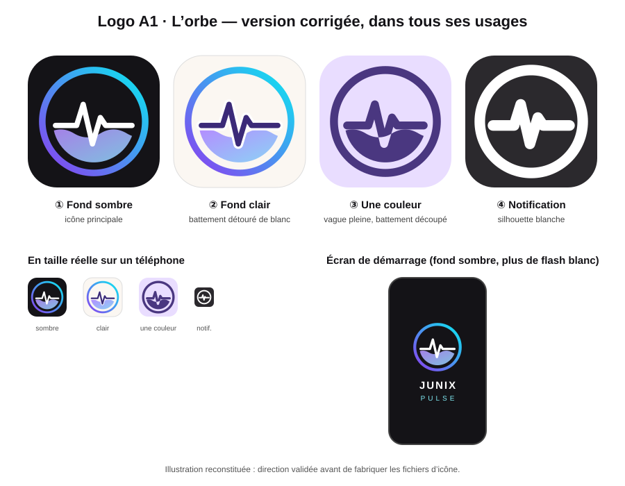

Comment terminer, tester, publier et faire évoluer l'application, seul, étape par étape, action par action.
Version du 23 novembre 2026 · Branche master · Dernier commit cda1910 · 14 fichier(s) modifié(s) non enregistré(s)
Écrit pour être suivi comme une recette : ingrédients, ustensiles, quantités, puis chaque geste dans l'ordre.
Ce document vit avec le projet : à chaque étape terminée, on le met à jour (chapitre 25 : comment faire). La version et l'état du projet décrits sont imprimés sur la couverture, lus automatiquement dans git au moment de la fabrication du PDF.
Date
Ce qui a changé dans le document
État du projet décrit
23 novembre 2026 (soir)
Première version : état du projet, outils, plan du code, règles, recettes A à L, boîte à outils, annexes (fiches 003, 008, 009, 010, index, étude section 12)
Fiche 010 appliquée, pas encore testée
23 novembre 2026 (suite)
Fiche 010 terminée : chapitre 2.2 (vérifications faites), recette B (« commence à l'étape 6 », ce que les tests ont demandé), commande de commit avec jest.setup.js, feuille de route ; ajout de ce journal, de la version automatique sur la couverture, du chapitre 25 et de la commande qui refait aussi l'archive
Fiche 010 testée (13 + 1904 tests) et vue sur le web ; pas encore enregistrée ni vue sur le téléphone
Ajoute une ligne par mise à jour, la plus récente en bas. Écris ce qui a changé dans le document (colonne 2) et où en est le projet (colonne 3).
1. Comment lire ce document
Ce document est un livre de recettes. Chaque chantier qui reste à faire sur Junix Pulse est écrit comme une recette de cuisine :
Tempsla durée à prévoir
Difficultéde 1 (facile) à 5 (expert)
Ingrédientsles fichiers à toucher
Ustensilesles outils et les commandes
Puis viennent les étapes, dans l'ordre, une action à la fois : « ouvre tel fichier », « cherche telle ligne », « remplace-la par celle-ci », « lance telle commande », « tu dois voir ceci ». Comme dans une vidéo tuto, rien n'est sous-entendu.
1.1 Les encadrés
À savoir : une explication pour comprendre ce que tu fais.
Astuce : une façon plus rapide ou plus sûre de faire.
Attention : une erreur fréquente, à éviter.
Danger : une action qui peut casser l'application ou faire perdre des données. Lis deux fois avant.
1.2 Les blocs de commande
Un bloc noir comme celui-ci est à copier tel quel dans un terminal (PowerShell ou Git Bash, c'est précisé à chaque fois) :
cd C:\Users\simon\Desktop\Projets\junix-pulse-glowcard
git status --short
Ne copie que la commande, jamais le texte qui s'affiche après (PS C:\...> ou le résultat). Si tu recolles le résultat d'une commande dans le terminal, PowerShell essaie de l'exécuter et affiche des erreurs rouges sans conséquence, mais déroutantes.
1.3 Les trois règles qui ne se discutent pas
Une fiche d'abord, le code ensuite. Avant de toucher au projet, on écrit (ou on relit) la fiche opératoire dans docs/fiches/. Après, on compare ce qui s'est passé à la fiche, et on corrige la fiche si la réalité est différente. C'est ce qui te permet, à toi ou à n'importe qui, de refaire le travail sans aide.
On ne casse rien. Les migrations de la base de données ne font qu'ajouter (jamais supprimer une colonne ni une table). Les données des utilisateurs sont sacrées. Le code PIN, le chiffrement et le Sanctuaire ne sont jamais affaiblis.
On ne prétend jamais qu'un test a réussi s'il n'a pas été lancé. Une étape « faite » veut dire : faite et vérifiée.
2. Où en est le projet (23 novembre 2026)
2.1 Ce qui est fait et enregistré dans git
Commit
Ce qu'il contient
Envoyé sur GitHub ?
fe0d9f2
La carte de sauvegarde automatique, les premières fiches
oui
132bd3d
Fiche 003 : fabriquer l'APK sur le PC
oui
dc6cf03
Les deux familles « À faire » et « Moment », le choix « Nouveau », le registre des types, l'étude 001
non
cda1910
Le logo A1 (l'orbe) : icône, icône à thème, icône de notification, image de démarrage
non
Les deux derniers commits sont seulement sur ton PC. Si le disque lâche, ils sont perdus. Recette B, étape 9 : comment les envoyer sur GitHub (git push).
2.2 Fait, testé, mais PAS encore enregistré : la fiche 010
La fiche 010 (la nouvelle animation de lancement autour de l'orbe, et le nouveau PulseLogo) est appliquée, testée et vue sur le web. Il ne reste qu'à l'enregistrer (commit, recette B étape 6), à l'envoyer sur GitHub (étape 7), puis à la voir sur le téléphone (recette C).
Fichier
État
src/constants/orb-logo.ts
créé
src/components/ui/OrbMark.tsx
créé
src/components/ui/PulseLogo.tsx
remplacé
src/features/launch/splash-constants.ts
remplacé
src/features/launch/SplashAnimation.tsx
remplacé
src/app/_layout.tsx
modifié (5 endroits)
app.json
fond de démarrage passé à #141317
assets/logo/orbe-demarrage.svg
remplacé (image vide)
assets/images/splash-icon.png
refabriquée (transparente)
src/__tests__/launch-orb.test.tsx
créé
src/__tests__/app-icons.test.ts
1 ligne modifiée
jest.setup.js
1 ligne ajoutée (cancelAnimation)
docs/fiches/FICHE-010-…md et INDEX.md
fiche corrigée, compte rendu écrit
Les vérifications faites le 23 novembre 2026 :
Vérification
Résultat
Les 3 fichiers de test de la fiche
Tests: 13 passed, 13 total
Toute la suite de tests
86 passed (fichiers), 1904 passed (tests)
npx tsc --noEmit
aucune erreur
npx eslint sur les fichiers de la fiche
aucune erreur
Sur le web
animation complète conforme, aucune erreur dans la console
Sur le téléphone
pas encore (il faut un nouvel APK)
Trois corrections ont été nécessaires pendant les tests ; elles sont décrites dans le compte rendu de la fiche 010 (annexe A, tout en bas) et la fiche a été corrigée pour décrire la version qui marche.
Figure 1 bis — Ce que montre l'animation à 2,5 s sur le web (reconstitution fidèle de la capture du 23 novembre) : l'orbe battant, l'onde cyan, le nom.
Si un jour tu dois tout annuler et repartir de l'état cda1910, la fiche 010 donne la commande à sa section 6 (Sauvegarde). Tu peux ensuite réappliquer la fiche avec l'outil outils/appliquer-fiche-010.js fourni avec ce document.
Le réglage Windows chemins longs (LongPathsEnabled = 1) est déjà activé sur ton PC. Sans lui, la compilation Android échoue (ninja: mkdir ... No such file or directory). Si tu changes de PC, voir l'annexe B (fiche 003).
3.2 Les ingrédients de base (les bibliothèques du projet)
Ne rien installer de plus sans raison. Voici celles dont on se sert dans les recettes, toutes déjà présentes :
Bibliothèque
À quoi elle sert dans Junix Pulse
expo (SDK 58) et expo-router
L'application et ses écrans (un fichier dans src/app = un écran)
react-native 0.88
Les composants de base (View, Text, Pressable)
react-native-reanimated
Les animations fluides (valeurs partagées, withTiming)
react-native-gesture-handler
Les gestes (glisser, appui long)
react-native-svg
Les dessins (logo, mascotte, graphiques)
expo-sqlite + SQLCipher
La base de données chiffrée
expo-notifications
Les notifications et leurs canaux Android
expo-audio
Les sons (son de lancement, son des rappels)
zod
La vérification des sauvegardes importées
jest + react-test-renderer
Les tests automatiques
La règle du projet (fichier AGENTS.md) : Expo a changé. Avant d'écrire du code qui utilise Expo, lis la documentation de la version exacte : https://docs.expo.dev/versions/v58.0.0/ (pas celle de la dernière version, pas un vieux tuto).
cd C:\Users\simon\Desktop\Projets\junix-pulse-glowcard
Vérifie l'état :
git status --short
git log --oneline -5
Tu dois voir les fichiers de la fiche 010 en M (modifié) ou ?? (nouveau), et ?? docs/motion/.
Le dossier docs/motion/n'est pas à toi (il vient d'un autre travail). Ne l'ajoute jamais à un commit, ne le supprime pas.
Ouvre le dossier dans VS Code :
code .
4. Le plan de la maison : comment le code est rangé
4.1 Les étages
Le code est rangé en couches, comme les étages d'une maison. Une couche n'utilise que celles en dessous d'elle. C'est ce qui permet d'ajouter ou d'enlever une fonction sans tout casser.
Figure 2 — Les couches du code. Une couche n'appelle que celles du dessous.
4.2 Les pièces les plus importantes
Fichier
Rôle
Quand tu le touches
src/constants/item-kinds.ts
Le registre des types : les deux familles (À faire, Moment), leurs couleurs, icônes, libellés
Pour ajouter un type ou une famille : un seul endroit
src/i18n/messages.ts
Tous les textes, en français puis en anglais
À chaque texte affiché : toujours les deux langues
src/database/migrations.ts
L'historique de la base (version 33 actuellement)
Pour une nouvelle colonne ou table : une nouvelle version, jamais modifier une ancienne
src/services/backup-service.ts
La sauvegarde et la restauration
Dès qu'une table ou une colonne est ajoutée
src/services/notification-service.ts
Les canaux Android et la programmation des notifications
Recettes D et K
src/app/_layout.tsx
Le démarrage : base, réglages, notifications, animation
Avec prudence
src/constants/theme.ts
Les couleurs et tailles (sombre #141317, violet, cyan)
Jamais de couleur « en dur » ailleurs
src/features/mascot/
Pulse, la mascotte
Recettes H et B
4.3 Le registre des types, en image
Figure 3 — Deux familles à l'écran, trois types dans les données (décision 1-B).
Pourquoi c'est important : quand tu ajoutes plus tard un type (par exemple « Anniversaire » comme type de Moment), tu l'ajoutes dans le registre, et le choix « Nouveau », les cartes et les couleurs suivent tout seuls. C'est la règle « ajouter ou enlever sans casser ».
5. Les règles de la maison (à relire avant chaque recette)
Règle
Pourquoi
Comment la respecter
Fiche d'abord
Pouvoir refaire seul
Copier une fiche existante (ex. FICHE-010) et l'adapter
Nouvelle version dans migrations.ts, ALTER TABLE … ADD COLUMN avec une valeur par défaut
Pas d'apostrophe dans les commentaires SQL
Un test du projet le vérifie (elle casse la requête)
Écrire « de la » au lieu de « l'… » dans les -- SQL
Sauvegarde à jour
Une restauration doit tout ramener
Toute nouvelle table : dans backup-service.ts, avec .default([]) dans le schéma zod
Deux langues
L'appli est FR / EN
Chaque clé ajoutée dans le bloc FR et le bloc EN de messages.ts
Pas d'emoji dans l'interface
Règle de design A.1
Utiliser les icônes (Ionicons)
Cibles de 44 px
Accessibilité
minHeight: 44 sur tout ce qui se touche
accessibilityLabel
Lecteurs d'écran
Sur chaque bouton qui n'a qu'une icône
Mouvement réduit
Accessibilité
useSafeReducedMotion() dans toute animation
Clair et sombre
Les deux thèmes existent
Regarder chaque écran dans les deux
Un seul dégradé par écran
Sobriété
—
PIN et chiffrement intouchables
Sécurité
Ne jamais réduire le nombre d'essais, la dérivation de clé, ni stocker le PIN en clair
Pas de nouvelle dépendance sans raison
Poids, sécurité
Chercher d'abord dans ce qui est déjà installé
6. Recette A — Installer l'APK sur le téléphone
Temps10 minutes
Difficulté1 / 5
Ingrédientsle fichier .apk (62 Mo)
Ustensilescâble USB ou Google Drive / WhatsApp
6.1 Avant tout : sauvegarder les données de l'appli
Si l'appli déjà installée sur le téléphone a été fabriquée par Expo (EAS, dans le nuage), Android refusera d'installer par-dessus notre APK (signature différente) : il faudra désinstaller, ce qui efface les données. Sauvegarde d'abord.
Ouvre Junix Pulse sur le téléphone.
Va dans Réglages › Sauvegarde.
Touche Exporter une sauvegarde, choisis un mot de passe dont tu te souviendras, et enregistre le fichier dans Téléchargements ou Google Drive.
Vérifie que le fichier existe (application Fichiers).
6.2 Mettre le fichier sur le téléphone
Méthode 1 — câble USB
Branche le téléphone au PC. Sur le téléphone, choisis Transfert de fichiers.
Dans l'Explorateur Windows, ouvre le téléphone › Download.
Méthode 2 — sans câble : envoie le fichier sur ton Google Drive, ou en message à toi-même, puis télécharge-le sur le téléphone.
6.3 Installer
Sur le téléphone, ouvre Fichiers › Téléchargements, touche le fichier .apk.
Android demande l'autorisation d'installer des applications inconnues pour l'application Fichiers : Paramètres › Autoriser cette source, puis retour.
Touche Installer.
Si Android dit « Application non installée » ou « conflit de package » : l'appli installée a une autre signature. Désinstalle Junix Pulse (appui long sur l'icône › Désinstaller), puis recommence l'étape 1.
Si l'APK précédent venait déjà de ton PC (fiche 003), l'installation se fait par-dessus, sans perdre les données.
Si tu as dû désinstaller : ouvre l'appli, Réglages › Sauvegarde › Restaurer, choisis ton fichier, tape le mot de passe.
6.4 Ce que tu dois voir avec cet APK
Où
Ce que tu dois voir
Écran d'accueil du téléphone
L'orbe (anneau violet → cyan, liquide, battement blanc) sur fond sombre, sans texte
Réglages Android › Fond d'écran et style › Icônes à thème
L'orbe d'une seule couleur, avec la vague pleine et le battement découpé
Une notification de rappel
La silhouette blanche (anneau + battement) dans la barre d'état
Le bouton « + » de l'accueil
Le choix À faire (avec ou sans alerte) ou Moment
Au lancement
Encore l'ancienne animation, sur fond blanc (normal : la fiche 010 n'est pas dans cet APK)
7. Recette B — Terminer la fiche 010 (la nouvelle animation de lancement)
Temps45 minutes à 1 h 30
Difficulté2 / 5
Ingrédientsles 12 fichiers de la fiche 010
UstensilesPowerShell, Edge, le navigateur
Où tu en es (23 novembre 2026) : les étapes 1 à 5 de cette recette sont faites et réussies (image refabriquée, 13 tests puis 1904 tests réussis, tsc et eslint propres, animation vue sur le web, compte rendu et index écrits). Commence directement à l'étape 6 (7.8, l'enregistrement). Les étapes 1 à 5 restent décrites ci-dessous pour pouvoir les refaire, par exemple après une modification de l'animation.
Ce que les tests ont réellement demandé (et qui est maintenant dans la fiche) : un faux module de son dans le test (jest.mock('expo-audio', …)), la propriété label au lieu de accessibilityLabel sur OrbMark, et cancelAnimation ajouté au faux Reanimated de jest.setup.js. Si tu rencontres l'une de ces erreurs dans un autre test, la solution est la même.
7.1 Ce que fait la nouvelle animation
Figure 4 — Le déroulé de l'animation (4,4 s). Fondu sur l'appli à 3,90 s. Pulse n'apparaît que si la mascotte est activée.
7.2 Les ingrédients, déjà en place
Les dix fichiers listés au chapitre 2.2. Le code complet de chacun est dans la fiche 010 (annexe A), section 7, étapes 1 à 7, avec l'explication ligne par ligne.
Si un jour tu dois réappliquer la fiche 010 (par exemple après avoir tout annulé), l'outil fourni le fait tout seul, à partir des blocs de la fiche :
Il vérifie d'abord que chaque morceau à remplacer existe une seule fois ; sinon il s'arrête sans rien écrire.
7.3 Étape 1 — Refabriquer l'image de démarrage
L'image assets/images/splash-icon.png doit devenir transparente (vide), car l'écran de démarrage d'Android est maintenant sombre et vide, et c'est notre animation qui dessine l'orbe.
cd C:\Users\simon\Desktop\Projets\junix-pulse-glowcard
node scripts/logo/generer-icones.js
Tu dois voir six lignes, par exemple :
assets/images/icon.png (1024 x 1024)
assets/images/android-icon-foreground.png (1024 x 1024)
assets/images/android-icon-monochrome.png (1024 x 1024)
assets/images/notification-icon.png (96 x 96)
assets/images/splash-icon.png (1024 x 1024)
assets/images/favicon.png (48 x 48)
Puis :
git status --short assets/images
Tu dois voir au moins M assets/images/splash-icon.png. Si d'autres images apparaissent, ouvre-les (double-clic) : si elles sont identiques à l'œil, c'est Edge qui a recompressé autrement ; tu peux les garder ou les remettre comme avant avec git restore assets/images/icon.png (par exemple).
Si tu vois Image non produite, ferme toutes les fenêtres Edge et relance. Voir le dépannage de l'annexe C.
7.4 Étape 2 — Lancer les tests de la fiche
npx jest src/__tests__/launch-orb.test.tsx src/__tests__/splash-and-logo.test.tsx src/__tests__/app-icons.test.ts
Tu dois voir à la fin : Tests: 13 passed, 13 total.
Si un test échoue, voici les cas les plus probables (ces tests n'avaient pas encore été lancés quand la session s'est arrêtée) :
Message
Cause probable
Remède
Cannot find module 'expo-audio' ou une erreur venant de createAudioPlayer
Le module son n'existe pas dans l'environnement de test
En haut de launch-orb.test.tsx, après les import, ajouter : jest.mock('expo-audio', () => ({ createAudioPlayer: () => ({ play() {}, pause() {}, remove() {}, volume: 1 }) }));
expect(received).toHaveBeenCalledTimes(1) reçoit 0 dans « always ends »
Les minuteurs simulés de Jest ne pilotent pas ceux de Reanimated
Le filet de sécurité est un setTimeout ordinaire : vérifier que jest.useFakeTimers() est bien dans beforeEach ; sinon remplacer advanceTimersByTime par jest.runOnlyPendingTimers()
findAllByType(PulseMascot) reçoit 0 avec greet vrai
Import de PulseMascot différent
Vérifier que le test importe ../features/mascot/PulseMascot
Le test du thème clair ne trouve pas le contour blanc
useTheme lit le thème autrement
Ouvrir src/hooks/use-theme.ts, vérifier comment isDark est calculé, et régler useAppStore.setState({ themeMode: 'light' }) en conséquence
ORB_BEAT_LENGTH - length trop grand
Le dessin du battement a été modifié
Mettre dans orb-logo.ts la longueur affichée par le test, arrondie au-dessus
Pour ne relancer qu'un test : npx jest src/__tests__/launch-orb.test.tsx -t "tapped" (le mot après -t est un morceau du nom du test).
7.5 Étape 3 — Vérifier les types et le style du code
Ajouter la valeur citée dans le tableau des dépendances du useEffect
Cannot find name 'require' dans SplashAnimation.tsx
Ajouter en haut du fichier : declare const require: (id: string) => number; (l'ancien fichier faisait déjà un require du son ; vérifier qu'il ne déclarait pas cela)
7.6 Étape 4 — Regarder l'animation sur le web
Lance le serveur de développement :
npx expo start --web
Le navigateur s'ouvre sur http://localhost:8081.
L'animation ne se joue qu'au premier lancement ou après 15 minutes sans utiliser l'appli. Pour la rejouer : touche F12 › onglet Application › Stockage › Effacer les données du site, puis F5.
« Effacer les données du site » efface les données de la version web seulement, jamais celles du téléphone. Sur le web, refais l'onboarding ensuite.
Ce que tu dois voir, dans l'ordre : fond sombre (plus de blanc) ; l'anneau se dessine depuis la gauche ; le liquide monte en ondulant ; le battement blanc passe ; deux petits battements et une onde cyan ; « JUNIX » blanc et « PULSE » cyan montent ; Pulse apparaît à la place de l'orbe et fait coucou ; fondu sur l'appli.
Teste un toucher pendant l'animation : elle doit s'arrêter et l'appli s'ouvrir.
Ferme le serveur : Ctrl + C dans PowerShell.
Ce que tu vois
Cause
Remède
L'anneau se dessine depuis la droite
La rotation n'est pas appliquée sur le web
Dans OrbMark.tsx, remplacer transform="rotate(180)" par rotation={180}
Le dégradé de l'anneau est inversé (cyan en bas)
Le dégradé tourne avec l'anneau
Garder x1="1" y1="0" x2="0" y2="1"avec la rotation ; si tu enlèves l'une, enlève l'autre
Le liquide ne bouge pas
d animé non pris en charge sur le web
Normal sur certains navigateurs : vérifier sur le téléphone, c'est lui qui compte
Pulse est décalé de quelques pixels
Les proportions de la mascotte
Ajuster MASCOT_SHIFT.y dans SplashAnimation.tsx (par pas de 2)
Pulse n'apparaît pas
Mascotte désactivée, ou base ouverte après 3 s
Réglages › Mascotte : Présence ; c'est le comportement voulu
7.7 Étape 5 — Le compte rendu dans la fiche (concordance)
Ouvre docs/fiches/FICHE-010-animation-lancement-orbe.md, va tout en bas, et ajoute (en adaptant à ce qui s'est vraiment passé) :
## Compte rendu d'exécution (date du jour)
- Étapes 1 à 7 appliquées à partir des blocs de cette fiche.
- Image de démarrage refabriquée : splash-icon.png transparente.
- Test final : Tests: 13 passed ; tsc et eslint sans erreur.
- Vu sur le web : (ce que tu as vu)
- Écarts corrigés : (chaque correction faite, et la fiche mise à jour en conséquence)
- Pas encore vu sur le téléphone.
Si tu as corrigé un fichier pendant l'exécution, corrige aussi le bloc correspondant dans la fiche. Sinon, la prochaine personne qui suivra la fiche refera l'erreur.
Puis, dans docs/fiches/INDEX.md, ajoute la ligne :
| [010](FICHE-010-animation-lancement-orbe.md) | L'animation de lancement autour de l'orbe, et le nouveau PulseLogo | 23 novembre 2026 | fait (vu sur le web, à voir sur le téléphone) |
7.8 Étape 6 — Enregistrer (commit) sans rien emporter d'autre
On liste chaque chemin (règle du projet). Les fichiers nouveaux doivent d'abord être « annoncés » à git avec git add -N :
Puis le commit, en une seule commande (dans Git Bash c'est plus simple pour le message sur plusieurs lignes ; dans PowerShell, un message d'une ligne suffit) :
git commit -m "feat(launch): the launch animation around the orb, on a dark screen, and PulseLogo as the orb" -- src/constants/orb-logo.ts src/components/ui/OrbMark.tsx src/components/ui/PulseLogo.tsx src/features/launch/splash-constants.ts src/features/launch/SplashAnimation.tsx src/app/_layout.tsx app.json assets/logo/orbe-demarrage.svg assets/images/splash-icon.png src/__tests__/launch-orb.test.tsx src/__tests__/app-icons.test.ts jest.setup.js docs/fiches/FICHE-010-animation-lancement-orbe.md docs/fiches/INDEX.md
Vérifie :
git status --short
git log --oneline -3
Tu dois voir : seulement ?? docs/motion/ (et ?? docs/tutoriel-suite/ si tu ne l'as pas encore enregistré), et ton commit en haut de la liste.
Jamais git add . ni git commit -a : cela emporterait docs/motion/.
7.9 Étape 7 — Envoyer sur GitHub (push)
git push origin master
Cela envoie les trois commits en attente (dc6cf03, cda1910, et celui de la fiche 010). Si Git demande de te connecter, une fenêtre de connexion GitHub s'ouvre : connecte-toi dans cette fenêtre.
8. Recette C — Fabriquer un APK sur le PC
Temps25 min (1re fois) · 8 à 15 min ensuite
Difficulté2 / 5
Ingrédientsle projet, `local.properties`
UstensilesGit Bash, Android SDK, NDK, CMake 4.1.2
Le détail complet, avec le dépannage, est la fiche 003 (annexe B). Voici la recette condensée, testée le 23 novembre 2026.
8.1 Le schéma
Figure 5 — De ton code à l'APK.
8.2 Les gestes
1. Refaire le projet Android (obligatoire quand app.json, les icônes ou un module natif changent) — dans PowerShell :
cd C:\Users\simon\Desktop\Projets\junix-pulse-glowcard
npx expo prebuild --platform android --clean
Tu dois voir ✔ Finished prebuild.
2. Recréer android/local.properties (le prebuild l'efface). Crée le fichier avec VS Code, contenu exact (les doubles barres sont voulues) :
ninja: error: mkdir(...): No such file or directory
Chemins longs désactivés : voir annexe B
Compatibility with CMake < 3.5 has been removed
Oubli de CMAKE_POLICY_VERSION_MINIMUM=3.5
JAVA_HOME is set to an invalid directory
Vérifier que le dossier jbr existe
La compilation s'arrête sans erreur (fenêtre fermée, PC en veille)
Relancer la même commande : Gradle reprend là où il en était
Quota Expo (EAS) épuisé
C'est pourquoi on compile sur le PC ; le quota gratuit revient le 1er décembre 2026
9. La méthode pour chaque nouveau chantier
Chaque recette D à L suit toujours les mêmes huit gestes. Apprends-les une fois :
Figure 6 — Les huit gestes de chaque chantier.
Relire la décision dans l'étude 001, section 12 (annexe F). Ne rien inventer qui contredise une décision.
Lire le code existant que tu vas toucher, en entier. Les noms de fichiers donnés ici sont ceux du 23 novembre 2026 ; vérifie qu'ils existent toujours (dir src\services).
Écrire la fichedocs/fiches/FICHE-0NN-nom.md : copie la structure de la fiche 010 (objectif, état de départ, matériel, hypothèses, carte, sauvegarde, étapes avec blocs, test final, dépannage, lexique, et après).
Commencer par la règle pure dans src/domain/rules/ et son test : c'est la partie la plus facile à vérifier, et tout le reste s'appuie dessus.
Les données : si une colonne ou une table manque, une nouvelle migration (chapitre 9.2), et la sauvegarde mise à jour.
L'écran, avec les textes en français et en anglais.
Vérifier : npx jest, npx tsc --noEmit, npx eslint <fichiers>, puis le web, puis le téléphone.
Compte rendu dans la fiche, commit par chemins, APK (recette C).
9.1 Recette de base : ajouter un texte dans les deux langues
Ouvre src/i18n/messages.ts. Le fichier a deux blocs : le français d'abord, l'anglais ensuite. Chaque texte a une clé ('home.quickAdd') qui est la même dans les deux blocs.
Cherche (Ctrl + F) une clé voisine de celle que tu ajoutes, par exemple 'home.quickAdd'. Tu la trouveras deux fois (vers la ligne 225 en français, vers la ligne 741 en anglais).
Ajoute ta clé juste en dessous, dans les deux blocs :
'home.quickAddHint': 'Touchez pour choisir', // dans le bloc français
'home.quickAddHint': 'Tap to choose', // dans le bloc anglais
Dans l'écran : const t = useT(); puis t('home.quickAddHint').
Une clé présente dans une seule langue fait échouer un test du projet. C'est voulu : il te prévient.
9.2 Recette de base : ajouter une colonne à la base sans rien perdre
La base est à la version 33. Ouvre src/database/migrations.ts et va tout en bas de la liste des migrations. Ajoute la suivante après la dernière, sans jamais modifier une migration existante :
{
version: 34,
// Niveau de notification choisi pour chaque rappel : discret, normal ou alarme
sql: `
ALTER TABLE reminders ADD COLUMN notification_level TEXT NOT NULL DEFAULT 'normal';
`,
},
Recopie la forme exacte des migrations voisines (le nom des propriétés peut être sql, up ou une fonction : regarde la version 33 et fais pareil).
Dans les commentaires SQL (-- …) à l'intérieur de la requête, aucune apostrophe : un test du projet le vérifie, car une apostrophe peut fermer la chaîne SQL par erreur. DEFAULT 'normal' est une vraie valeur, pas un commentaire : là, c'est permis.
Ensuite, trois endroits à suivre :
Endroit
Quoi faire
src/domain/entities (le type Reminder)
Ajouter notificationLevel: NotificationLevel;
src/repositories/reminder-repository.ts
Lire la colonne (row.notification_level) et l'écrire dans INSERT / UPDATE
src/services/backup-service.ts
Ajouter la colonne à la liste des colonnes exportées, et dans le schéma zod : notificationLevel: z.enum(['discreet','normal','alarm']).default('normal') pour que les anciennes sauvegardes se restaurent encore
Test final : le test des migrations du dossier src/database/__tests__ doit passer ; restaure une ancienne sauvegarde sur le web pour vérifier qu'elle s'ouvre.
10. Recette D — Les notifications des trois types, avec trois niveaux
Temps2 à 3 jours
Difficulté4 / 5
Ingrédientsnotification-service.ts, reminder-notification-service.ts, une règle, une migration
Ustensilesexpo-notifications (déjà là)
10.1 La décision (étude 12.6)
Les notifications existent pour les trois types : rappels (déjà fait), tâches avec une échéance, moments (événements) avec un début.
Trois niveaux : Discret (silencieux, sans vibration), Normal (son et vibration), Alarme (son fort, plein écran si permis, répété).
Le niveau est proposé automatiquement selon des critères, et modifiable par l'utilisateur.
10.2 Le schéma
Figure 7 — Un élément, une règle, un canal Android.
/**
* Which notification level an item gets: discreet, normal or alarm (study 001, 12.6).
* A level the user chose always wins; otherwise it follows simple criteria.
*/
export type NotificationLevel = 'discreet' | 'normal' | 'alarm';
export const NOTIFICATION_LEVELS: readonly NotificationLevel[] = ['discreet', 'normal', 'alarm'];
export interface NotificationLevelInput {
/** The level the user picked for this item, if any. */
chosen?: NotificationLevel | null;
kind: 'reminder' | 'task' | 'event';
/** Marked important or urgent by the user. */
important?: boolean;
/** For an event: its type, for instance 'birthday' or 'funeral' (recipe G). */
eventType?: string | null;
/** Minutes between now and the moment it rings. */
minutesAhead?: number;
}
/** Event types that deserve to be heard. Kept small on purpose: the user can change it. */
const LOUD_EVENT_TYPES = new Set(['medical', 'travel', 'exam']);
export function notificationLevelFor(input: NotificationLevelInput): NotificationLevel {
if (input.chosen && NOTIFICATION_LEVELS.includes(input.chosen)) return input.chosen;
if (input.important) return 'alarm';
if (input.kind === 'event' && input.eventType && LOUD_EVENT_TYPES.has(input.eventType)) return 'alarm';
if (input.kind === 'task') return 'discreet';
return 'normal';
}
Ligne
Rôle
chosen gagne toujours
L'utilisateur garde la main (règle d'or du projet)
important → alarme
Ce que l'utilisateur a marqué important doit le réveiller
LOUD_EVENT_TYPES
Quelques types d'événements qui sonnent fort ; à relier à la recette G
tâche → discret
Une tâche n'est pas un rendez-vous : on prévient sans déranger
import { notificationLevelFor } from '../notification-level-rules';
describe('notificationLevelFor', () => {
it('keeps the level the user chose', () => {
expect(notificationLevelFor({ kind: 'task', chosen: 'alarm' })).toBe('alarm');
});
it('rings loud for what is important', () => {
expect(notificationLevelFor({ kind: 'reminder', important: true })).toBe('alarm');
});
it('keeps tasks discreet and reminders normal by default', () => {
expect(notificationLevelFor({ kind: 'task' })).toBe('discreet');
expect(notificationLevelFor({ kind: 'reminder' })).toBe('normal');
});
it('rings loud for a medical appointment', () => {
expect(notificationLevelFor({ kind: 'event', eventType: 'medical' })).toBe('alarm');
});
});
npx jest src/domain/rules/__tests__/notification-level-rules.test.ts
Tu dois voir Tests: 4 passed.
10.4 Étape 2 — Les canaux Android
Android range les notifications par canal. Le son et l'importance d'un canal sont fixés à sa création : on ne peut plus les changer ensuite par le code (l'utilisateur, lui, peut les changer dans les réglages du téléphone). Donc : un canal par niveau, avec un nouveau nom de canal si un jour tu changes ses réglages.
Ouvre src/services/notification-service.ts. Vers la ligne 92, tu trouves les appels Notifications.setNotificationChannelAsync("reminders", …), puis les canaux NOTIFICATION_CHANNEL_ID, NOTIFICATION_SILENT_CHANNEL_ID, DAILY_RECAP_CHANNEL_ID.
Lis-les : il existe déjà un canal normal et un canal silencieux. Note leurs noms.
bypassDnd: false : on ne contourne pas le mode Ne pas déranger du téléphone. C'est une règle de sécurité Android et du projet. L'utilisateur peut l'autoriser lui-même dans les réglages Android du canal.
Définis la constante en haut du fichier, à côté des autres : export const NOTIFICATION_ALARM_CHANNEL_ID = 'reminders-alarm';
Ajoute les textes notifications.channelAlarm (FR : « Alarmes », EN : « Alarms ») dans les deux langues (recette 9.1).
Écris une petite fonction qui donne le canal d'un niveau :
export function channelForLevel(level: NotificationLevel): string {
if (level === 'alarm') return NOTIFICATION_ALARM_CHANNEL_ID;
if (level === 'discreet') return NOTIFICATION_SILENT_CHANNEL_ID;
return NOTIFICATION_CHANNEL_ID;
}
Là où la notification est programmée (vers la ligne 205, channelId:), remplace le canal fixe par channelForLevel(level).
Vérifie dans la documentation Expo 58 (expo-notifications) le nom exact des options (importance, vibrationPattern, lockscreenVisibility) avant d'écrire : c'est la règle AGENTS.md.
10.5 Étape 3 — Les tâches et les moments
Aujourd'hui, seule la synchronisation des rappels existe (src/services/reminder-notification-service.ts, fonction syncReminderNotifications). Pour les deux autres types :
Lis syncReminderNotifications en entier : elle annule les notifications périmées, puis programme les prochaines. Copie sa logique, ne réinvente pas.
Crée src/services/item-notification-service.ts avec syncTaskNotifications() (tâches non faites avec une échéance future : une notification à l'échéance) et syncEventNotifications() (événements futurs : une notification à début − délai, où le délai vient du réglage « Partir … min avant » s'il y a un lieu, sinon 15 min).
Identifie chaque notification par un identifiant stable : task:<id> et event:<id>. Ainsi, reprogrammer remplace au lieu de doubler.
Appelle ces deux fonctions aux mêmes endroits que syncReminderNotifications (démarrage dans _layout.tsx, après une création ou une modification).
Dans notification-action-service.ts, gère l'appui sur une notification task: (ouvrir /tasks/<id>) et event: (ouvrir /events/<id>). Les routes existent : src/app/tasks/[id].tsx et src/app/events/[id].tsx.
10.6 Étape 4 — Le choix dans les formulaires
Dans les formulaires (recette E), ajoute une rangée de trois boutons Discret · Normal · Alarme, pré-sélectionnée avec notificationLevelFor(...), et enregistrée dans la nouvelle colonne (migration 34, recette 9.2, une colonne par table concernée : reminders, tasks, events).
10.7 Vérifier
Test
Comment
Attendu
Règle
npx jest notification-level
4 tests réussis
Rappel normal
Créer un rappel dans 2 min, téléphone verrouillé
Son + vibration habituels
Tâche discrète
Une tâche à échéance dans 2 min
Notification silencieuse
Alarme
Un rappel marqué Alarme
Vibration longue, son ; visible sur l'écran verrouillé
Ne pas déranger
Activer « Ne pas déranger »
L'alarme ne passe pas (sauf si l'utilisateur l'autorise)
Deux formulaires bien différents à l'œil, construits depuis le registre :
Formulaire À faire
Formulaire Moment
Couleur
Cyan #7BD0FF (sombre) / #0E7490 (clair)
Ambre #F5B942 / #B45309
Icône
checkbox-outline
calendar-outline
Champs
Titre, interrupteur « Alerte » (si activé : date et heure), note, personnes, étiquettes
Titre, début et fin, lieu, « Partir … min avant » (seulement si un lieu), type d'événement, personnes
Dictée
Oui (micro)
Oui (micro)
À enlever
« Combien de temps pour y arriver » (jugé absurde)
—
11.2 Les gestes
Ouvre src/app/tasks/new.tsx, src/app/reminders/new.tsx et src/app/events/new.tsx. Note ce qu'ils ont en commun (titre, note, personnes, étiquettes, dictée).
Crée src/components/create/ItemFormHeader.tsx : un en-tête qui prend family et affiche l'icône, la couleur et le titre venant de ITEM_FAMILY_DEFINITIONS et itemFamilyColor(family, isDark). Les deux formulaires l'utilisent : ainsi, changer une couleur dans le registre change les formulaires.
Fusion À faire : dans tasks/new.tsx, ajoute l'interrupteur « Alerte à une heure ». S'il est activé, l'enregistrement crée un rappel (reminder) ; sinon une tâche (task). Le choix « Nouveau » (NewItemChooser.tsx) a déjà les deux entrées new-item-task et new-item-reminder : elles peuvent ouvrir le même formulaire avec l'interrupteur pré-réglé (?alert=1).
Moment : dans events/new.tsx, n'affiche le champ « Partir … min avant » que si location.trim() !== ''.
Enlève le champ « combien de temps pour y arriver » : ne supprime pas la colonne de la base (règle des migrations), cache seulement le champ.
Ajoute les textes (create.todo.alertSwitch, create.moment.leaveBefore…) en FR et EN.
Les tests : un test par formulaire qui vérifie que le champ « Partir avant » est caché sans lieu, et que l'interrupteur crée le bon type.
Garde les testID existants (new-item-todo, new-item-moment…) : des tests s'en servent.
12. Recette F — L'onglet « À faire » et le bouton « + À faire ou moment »
Le bouton de l'accueil dit encore « + Rappel, tâche ou événement ». Ouvre src/i18n/messages.ts :
Ligne 224-225 (français) — avant :
'home.quickAddA11y': 'Ajouter un rappel, une tâche ou un événement',
'home.quickAdd': '+ Rappel, tâche ou événement',
après :
'home.quickAddA11y': 'Ajouter une chose à faire ou un moment',
'home.quickAdd': '+ À faire ou moment',
Ligne 740-741 (anglais) — avant :
'home.quickAddA11y': 'Add a reminder, a task or an event',
'home.quickAdd': '+ Reminder, task or event',
après :
'home.quickAddA11y': 'Add a to-do or a moment',
'home.quickAdd': '+ To-do or moment',
Vérifie : npx jest (un test peut chercher l'ancien texte : mets-le à jour), puis regarde l'accueil sur le web.
12.2 L'onglet « À faire »
Aujourd'hui, la barre d'onglets (src/app/(tabs)/_layout.tsx) a des onglets séparés reminders et tasks. La décision 1-B : un seul onglet À faire qui montre les deux, avec la cloche sur ceux qui sonnent.
Lis src/app/(tabs)/_layout.tsx : chaque <Tabs.Screen name="…" /> est un onglet.
Dans src/app/(tabs)/tasks.tsx, ajoute la liste des rappels sous (ou mêlée à) celle des tâches, triées par heure. Utilise itemKindLook(kind) pour l'icône et la cloche (comme le fil de l'accueil, src/app/(tabs)/index.tsx).
Renomme le libellé de l'onglet tasks en itemFamily.todo (« À faire »).
Cache l'onglet reminders sans supprimer le fichier : <Tabs.Screen name="reminders" options={{ href: null }} />. Les liens profonds (/reminders/<id>) continuent de marcher.
Les cartes : une seule forme de carte pour les deux (GlowCard avec la couleur de la famille) ; une case à cocher ; la cloche si withAlert.
Les notifications de rappel ouvrent /reminders/<id> : ne supprime pas ces écrans.
13. Recette G — La hiérarchie des alertes et les types d'événements
Temps1 jour
Difficulté3 / 5
Ingrédientsitem-kinds.ts (ou un nouveau event-types.ts), migration
UstensilesIonicons
Ton message : « des types d'événements (anniversaire, enterrement…) ». Comme pour les familles, on fait un registre, pour pouvoir en ajouter ou en retirer sans rien casser.
Crée src/constants/event-types.ts :
/**
* The types of moments (study 001, 12.2 and 12.6). Add or remove one here only:
* forms, cards and notification levels follow.
*/
import type { NotificationLevel } from '@/domain/rules/notification-level-rules';
export const EVENT_TYPES = ['general', 'birthday', 'meeting', 'medical', 'travel', 'exam', 'celebration', 'funeral'] as const;
export type EventType = (typeof EVENT_TYPES)[number];
export interface EventTypeDefinition {
type: EventType;
icon: string; // an Ionicons name
labelKey: string; // the text key, in messages.ts
defaultLevel: NotificationLevel;
/** A sober look and no party mood for the mascot (a funeral is not a celebration). */
sober?: boolean;
}
export const EVENT_TYPE_DEFINITIONS: Record<EventType, EventTypeDefinition> = {
general: { type: 'general', icon: 'calendar-outline', labelKey: 'eventType.general', defaultLevel: 'normal' },
birthday: { type: 'birthday', icon: 'gift-outline', labelKey: 'eventType.birthday', defaultLevel: 'normal' },
meeting: { type: 'meeting', icon: 'people-outline', labelKey: 'eventType.meeting', defaultLevel: 'normal' },
medical: { type: 'medical', icon: 'medkit-outline', labelKey: 'eventType.medical', defaultLevel: 'alarm' },
travel: { type: 'travel', icon: 'airplane-outline', labelKey: 'eventType.travel', defaultLevel: 'alarm' },
exam: { type: 'exam', icon: 'school-outline', labelKey: 'eventType.exam', defaultLevel: 'alarm' },
celebration: { type: 'celebration', icon: 'sparkles-outline', labelKey: 'eventType.celebration', defaultLevel: 'normal' },
funeral: { type: 'funeral', icon: 'flower-outline', labelKey: 'eventType.funeral', defaultLevel: 'discreet', sober: true },
};
export function eventTypeDefinition(type: string | null | undefined): EventTypeDefinition {
return EVENT_TYPE_DEFINITIONS[(type ?? 'general') as EventType] ?? EVENT_TYPE_DEFINITIONS.general;
}
Puis :
Données : migration ALTER TABLE events ADD COLUMN event_type TEXT NOT NULL DEFAULT 'general'; (recette 9.2), plus le dépôt et la sauvegarde.
Textes : les clés eventType.general … eventType.funeral en FR (Général, Anniversaire, Réunion, Rendez-vous médical, Voyage, Examen, Fête, Obsèques) et EN.
Formulaire Moment : une rangée de puces (icône + libellé) pour choisir le type.
Niveau : dans notificationLevelFor, remplace l'ensemble LOUD_EVENT_TYPES par eventTypeDefinition(input.eventType).defaultLevel (et mets à jour le test).
Mascotte : un type sober ne doit jamais déclencher l'humeur « fête ». Cherche 'party' dans src/domain/rules/mascot-mood-rules.ts et ajoute la condition.
Test : eventTypeDefinition('inconnu') renvoie general (un ancien type supprimé ne casse rien).
Les icônes Ionicons : vérifie que chaque nom existe dans la version du projet (une icône inconnue s'affiche en point d'interrogation). La liste est sur le site icons.expo.fyi.
La décision (12.3) : les gestes (glisser pour cocher, appui long = menu dans les listes, glisser dans le planning) étaient comme des « œufs de Pâques ». On les fait découvrir une astuce à la fois, par Pulse, au bon moment, et on peut les revoir dans les réglages.
Lis src/features/mascot/FirstVisitTip.tsx et src/domain/rules/mascot-tour-rules.ts : le mécanisme d'astuce au premier passage existe déjà.
Crée src/domain/rules/gesture-tip-rules.ts : une liste ordonnée d'astuces { id, screen, condition }, et une fonction nextGestureTip(seenIds, screen, context) qui renvoie une seule astuce non vue, adaptée à l'écran, ou null. Exemple de condition : l'astuce « glisser pour cocher » seulement si la liste a au moins une tâche.
Teste la règle : jamais deux astuces à la fois ; une astuce vue ne revient pas ; null quand tout est vu.
Enregistre les astuces vues dans les réglages (migration : seen_gesture_tips TEXT NOT NULL DEFAULT '', liste séparée par des virgules).
Dans les réglages : un bouton « Revoir les astuces » qui vide cette liste.
Respecte la présence de la mascotte : si elle est désactivée, l'astuce s'affiche dans une simple bulle (MascotBubble avec solid), sans Pulse.
15. Recette I — Le partage, étape 5-A
Temps1 à 2 jours
Difficulté3 / 5
Ingrédientsune règle de mise en forme, l'écran détail
Ustensiles`Share` de React Native (déjà là), aucune dépendance
La décision (12.5) : partage hybride, par étapes, gratuit. Étape 5-A = partager un message lisible (WhatsApp, SMS, e-mail, Bluetooth : tout ce que le téléphone propose), sans compte.
On n'envoie jamais rien tout seul quand on ajoute une personne. Le partage se fait toujours par un bouton, par exemple « Envoyer à Paul ».
Crée src/domain/rules/share-text-rules.ts : shareTextFor(item, language) renvoie un texte simple, par exemple :
Moment : Anniversaire de Léa
Samedi 29 novembre, 19:00 - 22:00
Lieu : 12 rue des Lilas
Partagé avec Junix Pulse
Teste-la : date dans la bonne langue, lieu absent s'il n'y en a pas, aucune donnée privée (pas les notes, pas les étiquettes, pas le Sanctuaire).
Sur src/app/events/[id].tsx (et les tâches) : un bouton Partager qui appelle :
Si l'élément a des personnes avec un téléphone : un bouton « Envoyer à Paul » qui ouvre directement le SMS : Linking.openURL('sms:' + phone + '?body=' + encodeURIComponent(text)) (vérifier la forme exacte de l'adresse sms: sur Android).
Plus tard, 5-B (un fichier .junix que l'autre appli importe) et 5-C (compte et synchro, recette L).
16. Recette J — Le planning : Jour, Semaine, Mois, et glisser-déposer
Temps4 à 6 jours
Difficulté5 / 5
Ingrédients(tabs)/calendar.tsx, une règle de grille
Ustensilesgesture-handler + reanimated (déjà là)
La décision (12.4) : trois vues Jour · Semaine · Mois (l'Agenda et la Journée faisaient doublon), glisser-déposer dans les trois, par pas de 15 minutes.
16.1 La règle la plus importante : arrondir au quart d'heure
Tout le glisser-déposer repose sur un calcul simple : « l'élément a été lâché à telle hauteur, quelle heure est-ce ? ». Écris-le à part, testé, avant toute animation. Crée src/domain/rules/planning-grid-rules.ts :
/** The planning grid: from a position on screen to a time, in steps of 15 minutes. */
export const SNAP_MINUTES = 15;
/** Rounds a number of minutes to the nearest step. */
export function snapMinutes(minutes: number, step = SNAP_MINUTES): number {
'worklet';
return Math.round(minutes / step) * step;
}
/** Minutes since midnight for a vertical position, given the height of one hour. */
export function minutesAtY(y: number, hourHeight: number, step = SNAP_MINUTES): number {
'worklet';
const raw = (y / hourHeight) * 60;
return Math.min(24 * 60 - step, Math.max(0, snapMinutes(raw, step)));
}
/** Moves a start date by a number of minutes, keeping the length of the item. */
export function movedRange(start: Date, end: Date, deltaMinutes: number): { start: Date; end: Date } {
const shift = snapMinutes(deltaMinutes) * 60000;
return { start: new Date(start.getTime() + shift), end: new Date(end.getTime() + shift) };
}
Et son test :
import { minutesAtY, movedRange, snapMinutes } from '../planning-grid-rules';
describe('planning grid', () => {
it('snaps to the nearest quarter of an hour', () => {
expect(snapMinutes(7)).toBe(0);
expect(snapMinutes(8)).toBe(15);
expect(snapMinutes(52)).toBe(45);
});
it('turns a position into a time, inside the day', () => {
expect(minutesAtY(120, 60)).toBe(120); // 2:00
expect(minutesAtY(-30, 60)).toBe(0); // never before midnight
expect(minutesAtY(5000, 60)).toBe(1425); // never after 23:45
});
it('keeps the length of a moved item', () => {
const moved = movedRange(new Date('2026-11-29T19:00:00'), new Date('2026-11-29T22:00:00'), 31);
expect(moved.start.toTimeString().slice(0, 5)).toBe('19:30');
expect(moved.end.getTime() - moved.start.getTime()).toBe(3 * 3600000);
});
});
16.2 Le glisser, geste par geste
Dans la vue Jour, chaque carte est enveloppée dans un GestureDetector avec Gesture.Pan().activateAfterLongPress(350) : on appuie longtemps, puis on glisse (sinon le défilement de la page serait gêné).
Pendant le glisser, une valeur partagée translateY suit le doigt ; la carte s'affiche à snapMinutes près (elle « saute » de quart d'heure en quart d'heure), avec une petite vibration à chaque saut (haptic-service.ts).
Au lâcher (onEnd), on appelle en JS (runOnJS) la mise à jour : movedRange(...), puis le dépôt (event-repository ou task-repository), puis la resynchronisation des notifications (recette D).
Annuler : une barre « Déplacé à 19:30 — Annuler » (le Snackbar existe déjà) qui remet l'ancienne heure.
Semaine : même chose en horizontal (changer de jour) et vertical (changer d'heure). Mois : glisser change seulement le jour, l'heure est gardée.
Accessibilité : le glisser est impossible pour certains ; garde toujours le menu « Déplacer… » de l'appui long, qui ouvre un choix de date et d'heure.
17. Recette K — Les sons et l'alarme
Temps2 jours
Difficulté4 / 5
Ingrédientssrc/services/sound/, canaux de la recette D
Ustensilesexpo-audio
La décision (12.6) : une hiérarchie de sons et d'images ; une alarme « comme l'appli Horloge », mais à l'intérieur de la notification.
Lis src/services/sound/NotificationSoundService.ts et notification-sound-constants.ts : le son de l'appli au premier plan.
Au premier plan (appli ouverte) : un son par niveau (discret = aucun, normal = le son actuel, alarme = un son plus long, répété 3 fois au plus, arrêté par un toucher).
En arrière-plan : le son est celui du canal (recette D). Pour un son personnalisé : le fichier dans assets/sounds/, déclaré dans le module expo-notifications de app.json (option sounds), puis sound: 'nom-du-fichier.wav' dans le canal. Il faut un prebuild (recette C).
Les sonneries et musiques du téléphone (ton souhait) : Android ne laisse pas une appli lire librement les sonneries système depuis JavaScript sans module natif. Solution simple et sûre : l'utilisateur choisit le son du canal dans les réglages Android (bouton « Choisir le son de l'alarme » qui ouvre ces réglages avec Linking.openSettings()).
Plein écran : la notification « plein écran » (comme un appel) demande la permission Android USE_FULL_SCREEN_INTENT, que Google limite aux applis d'alarme et d'appel. Ne la demande pas sans être sûr que Junix Pulse y a droit (règles du Play Store). L'alarme de la recette D (importance maximale, visible sur l'écran verrouillé) est le bon compromis.
Ne contourne jamais les restrictions de sécurité Android (Ne pas déranger, alarmes exactes, plein écran). Le projet a déjà src/features/reminders/offer-exact-alarms.ts, qui demande poliment la permission des alarmes exactes : c'est le modèle à suivre.
18. Recette L — Le compte et la synchronisation (plus tard)
Tempsplusieurs semaines
Difficulté5 / 5
Ingrédientsun serveur
Ustensilesà choisir
C'est le dernier chantier, volontairement. Avant d'écrire une ligne, une étude (comme l'étude 001) doit trancher :
Question
Options
Coût
Où vivent les données partagées ?
Supabase (gratuit jusqu'à un certain volume), Firebase, ton propre serveur
Gratuit au début, payant si l'appli grandit
Le chiffrement
De bout en bout (le serveur ne lit rien) ou non
De bout en bout = plus de travail, mais cohérent avec le Sanctuaire
Le compte
Adresse e-mail, téléphone, ou lien magique
—
Les conflits
Deux personnes modifient le même moment
Règle « le dernier gagne » + historique
Les rôles (organisations)
Propriétaire, éditeur, lecteur
—
Ton budget est nul pour l'instant (« on n'a pas d'argent ») : reste sur 5-A et 5-B (sans serveur) tant que l'appli n'a pas d'utilisateurs qui le demandent.
19. Travailler avec une IA (Claude, ou une autre) sans perdre le fil
Quand tu auras de nouveau des jetons, ou avec un autre assistant, donne-lui ce cadre au début. Copie-colle ce texte, puis la recette voulue :
Projet : Junix Pulse (Expo SDK 58, React Native 0.88, expo-router, SQLite chiffré SQLCipher, FR/EN).
Dossier : C:\Users\simon\Desktop\Projets\junix-pulse-glowcard, branche master.
Avant tout code Expo, lire https://docs.expo.dev/versions/v58.0.0/ (Expo a changé).
Règles :
- Fiche opératoire d'abord dans docs/fiches/ (modèle : FICHE-010), puis exécution, puis compte rendu.
- Les décisions produit sont dans docs/etudes/ETUDE-001-clarifier-et-faire-evoluer.md, section 12. Ne pas les contredire.
- Tout ajout passe par les registres (src/constants/item-kinds.ts, event-types.ts) pour pouvoir ajouter ou retirer sans casser.
- Migrations additives seulement (version actuelle 33), sauvegarde (backup-service.ts) mise à jour, pas d'apostrophe dans les commentaires SQL.
- Textes en français ET en anglais (src/i18n/messages.ts).
- Ne jamais affaiblir le PIN, le chiffrement ni le Sanctuaire. Ne pas contourner les restrictions Android.
- Pas de nouvelle dépendance sans justification.
- Ne jamais commiter, pousser ni publier sans mon accord. Commit par chemins (git commit -- fichiers), jamais docs/motion/, jamais --no-verify.
- Ne jamais dire qu'un test a réussi sans l'avoir lancé.
Tâche : (colle ici la recette, par exemple « Recette D, étape 1 »).
Demande une étape à la fois, et vérifie chaque étape (tests) avant de passer à la suivante. C'est plus lent sur le moment, beaucoup plus rapide au total.
20. Git : l'aide-mémoire
Je veux…
Commande
Voir ce qui a changé
git status --short
Voir le détail d'un fichier
git diff src/app/_layout.tsx
Voir l'historique
git log --oneline -10
Annoncer un fichier nouveau
git add -N chemin/du/fichier
Enregistrer certains fichiers seulement
git commit -m "message" -- fichier1 fichier2
Envoyer sur GitHub
git push origin master
Annuler mes changements d'un fichier (pas encore enregistrés)
git restore chemin/du/fichier
Revenir sur un commit déjà envoyé, proprement
git revert <numéro> (crée un commit inverse)
Mettre de côté un instant
git stash push -- fichier puis git stash pop
Évite git reset --hard, git push --force et git clean -fd : ils effacent du travail sans retour possible. Et ne change pas de branche : d'autres travaux vivent dans ce dossier.
Écrire un bon message de commit : un type, puis ce que l'utilisateur gagne. Exemples tirés du projet :
feat(logo): the orb A1 as the app icon, themed icon, notification icon and launch image
fix(stats): figures that follow what the user does, and a microphone that explains itself
docs(fiches): build the APK on the PC, and the Expo quota on the shared build sheet
21. Les commandes de vérification, en un coup d'œil
Commande
Ce qu'elle vérifie
Durée
npx jest
Tous les tests
1 à 3 min
npx jest <fichier>
Un seul fichier de test
quelques secondes
npx tsc --noEmit
Les types (fautes de nom, mauvais arguments)
30 s à 1 min
npx eslint <fichiers>
Le style et les erreurs courantes
quelques secondes
npx expo start --web
L'appli dans le navigateur
—
npx expo config --type public
Que app.json est lisible
quelques secondes
npx expo-doctor
Les versions des modules
30 s
22. Dépannage général
Symptôme
Cause probable
Remède
Invalid VFS state sur le web
Deux onglets de l'appli ouverts sur la même base
Fermer tous les onglets sauf un
L'écran du web reste vide
Erreur JavaScript
F12 › Console : lire la première erreur rouge
L'appli du téléphone ne change pas après un APK
Ancien APK installé, ou prebuild oublié
Recette C depuis l'étape 1
« Application non installée »
Signature différente (Expo contre PC)
Sauvegarder, désinstaller, réinstaller, restaurer (recette A)
Un test des migrations échoue
Apostrophe dans un commentaire SQL, ou migration modifiée
Corriger le commentaire ; ne jamais modifier une ancienne migration
Une ancienne sauvegarde ne se restaure plus
Nouvelle colonne sans valeur par défaut dans zod
Ajouter .default(...) dans le schéma (recette 9.2)
Texte affiché comme home.quickAdd
Clé absente dans une langue
La recopier dans les deux blocs de messages.ts
Icône en point d'interrogation
Nom Ionicons inexistant
Vérifier sur icons.expo.fyi
Animation saccadée
Calcul lourd sur le fil JavaScript
Mettre le calcul dans un worklet, utiliser des valeurs partagées
La création du dossier android/ à partir de app.json
Commit
Un enregistrement daté du projet dans git
Push
L'envoi des commits sur GitHub
Migration
Une modification numérotée de la structure de la base
Dépôt (repository)
Le code qui lit et écrit une table
Règle pure
Une fonction sans écran ni base : même entrée, même sortie, facile à tester
Registre
Une liste unique qui décrit des types (familles, types d'événements)
Canal (Android)
Une catégorie de notifications avec son propre son et sa propre importance
Worklet
Une fonction exécutée sur le fil des animations
Valeur partagée
Un nombre animé par Reanimated
i18n
L'internationalisation : les textes en plusieurs langues
zod
La bibliothèque qui vérifie la forme d'une sauvegarde importée
SQLCipher
La version chiffrée de SQLite
Fiche opératoire
Le tutoriel écrit avant chaque action (docs/fiches/)
24. Les fichiers fournis avec ce document
Tout est dans docs/tutoriel-suite/ (et dans l'archive junix-pulse-tutoriel-suite.zip sur le Bureau) :
Chemin
Contenu
tutoriel-junix-pulse.pdf
Ce document
tutoriel-junix-pulse.html
Le même, à ouvrir dans un navigateur (liens cliquables)
chapitres/*.md
Le texte source des chapitres, modifiable
outils/construire-pdf.js
Refabrique le PDF (et l'archive avec --zip) : chapitre 25
outils/appliquer-fiche-010.js
Réapplique la fiche 010 à partir de ses blocs
assets/logo/*.svg
Les cinq dessins sources du logo (icône, Android, une couleur, notification, démarrage)
assets/images/*.png
Les icônes fabriquées (icon, android-icon-*, notification-icon, splash-icon, favicon)
assets/etude/*.svg
Les planches de l'étude (propositions de logo, A1 final)
assets/sons/junix-pulse-launch-sound.wav
Le son de lancement
assets/scripts/generer-icones.js
Le script qui fabrique les icônes
24.1 Les planches du logo

Figure 8 — Le logo A1 validé, dans tous ses usages (docs/etudes/images/logo-A1-final.svg).Figure 9 — L'icône de l'appli et l'icône à thème (Android 13+), telles que fabriquées.Figure 10 — Les propositions de logo de l'étude (A, B, C) : A a été choisi.
25. Mettre à jour ce document
Temps10 à 30 minutes
Difficulté1 / 5
Ingrédientsles fichiers `chapitres/*.md`
UstensilesVS Code, Node, Edge
Ce document n'est pas figé : il est fabriqué à partir de fichiers texte. Tu modifies le texte, tu lances une commande, et le PDF, la page HTML et l'archive du Bureau sont refaits.
25.1 Comment le document est fabriqué
Figure 11 — La fabrication du document.
Fichier
Rôle
À modifier ?
chapitres/00-journal.md
Le journal des mises à jour
Oui, à chaque fois
chapitres/01-…md à 04-…md
Les chapitres
Oui, là où l'état a changé
outils/couverture.html
La couverture ; {{DATE}}, {{COMMIT}}… sont remplis tout seuls
Rarement
outils/style.css
Couleurs, marges, polices du PDF
Rarement
outils/construire-pdf.js
La fabrique
Seulement pour ajouter une annexe
docs/fiches/*.md
Les annexes A à E, reprises automatiquement
Non : elles suivent les fiches
25.2 La recette, geste par geste
Ouvre le dossier docs/tutoriel-suite/chapitres/ dans VS Code.
Mets à jour l'état du projet : chapitre 2 (01-avant-de-commencer.md, sections 2.1 à 2.4). Exemple après l'enregistrement de la fiche 010 : dans le tableau 2.1, ajoute la ligne du nouveau commit ; dans 2.2, écris « rien en attente ».
Coche la recette terminée : au début de la recette concernée, ajoute un encadré :
> [astuce] **Fait le 25 novembre 2026** : commit `abc1234`, vu sur le téléphone.
Ajoute une ligne au journal (00-journal.md), la plus récente en bas.
Si tu as créé une nouvelle fiche (par exemple la 011), ajoute-la comme annexe : dans outils/construire-pdf.js, dans la liste annexes, ajoute une ligne sur le modèle des autres :
['Annexe G — Fiche 011 complète (notifications)', 'docs/fiches/FICHE-011-notifications.md'],
Fabrique le document, depuis la racine du projet :
cd C:\Users\simon\Desktop\Projets\junix-pulse-glowcard
node docs/tutoriel-suite/outils/construire-pdf.js --zip
Tu dois voir deux lignes :
C:\...\docs\tutoriel-suite\tutoriel-junix-pulse.pdf : 120 pages
C:\Users\simon\Desktop\junix-pulse-tutoriel-suite.zip : 2300 Ko
Vérifie : ouvre le PDF (double-clic), regarde la couverture (date et commit du jour) et la page que tu as modifiée.
25.3 Ce que le Markdown permet ici
Tu écris
Tu obtiens
# Titre
Un nouveau chapitre (nouvelle page, entrée du sommaire)
## Titre
Une section (entrée du sommaire)
### Titre
Une sous-section
**gras**, *italique*, `code`
Mise en forme
Une ligne qui commence par - ou 1.
Une liste
Un tableau avec des `
`
Un tableau
Trois accents graves suivis de powershell, bash, ts… puis le code, puis trois accents graves
Une image (chemin à partir de docs/tutoriel-suite/)
Un bloc qui commence par <figure> ou <svg
Un schéma dessiné (copie un schéma existant et modifie-le)
Une ligne vide sépare chaque paragraphe, tableau, liste ou schéma. Dans un schéma <svg>, pas de ligne vide à l'intérieur, sinon il est coupé en deux.
Pour ajouter une capture d'écran de l'appli : sur le téléphone, bouton marche + volume bas ; copie l'image dans docs/tutoriel-suite/assets/captures/, puis écris  dans le chapitre.
25.4 Si ça ne marche pas
Message
Remède
Edge introuvable
Indique le chemin de Chrome ou Edge : $env:EDGE_PATH = 'C:\chemin\vers\msedge.exe' puis relance
Le PDF a 0 page ou n'apparaît pas
Ferme toutes les fenêtres Edge, puis relance
ENOENT … FICHE-011…
Le chemin de l'annexe ajoutée est faux : vérifie le nom exact dans docs/fiches/
Un tableau s'affiche comme du texte
La 2e ligne du tableau doit être `
---
---
` (autant de colonnes que l'en-tête)
Le zip échoue (being used by another process)
Ferme le zip s'il est ouvert, et le PDF dans le lecteur, puis relance
Annexe A — Fiche 010 complète (animation de lancement)
Projet : Junix Pulse · Date : 23 novembre 2026 · Suite de : FICHE 009 · Étude : ÉTUDE 001, sections 4 (« Animation de lancement »), 12.7 et 12.10 (chantier n° 1) · Dessin validé : logo-A1-final.svg
1. Objectif
Ce que l'utilisateur voit en premier en ouvrant l'appli devient l'orbe A1, sur fond sombre, sans aucun flash blanc :
Moment
Ce qu'on voit
0,00 s
Fond sombre #141317 (la couleur de l'appli et de l'icône), une lueur violette s'allume au centre
0,15 s
L'anneau se dessine, dans le sens des aiguilles d'une montre, en partant de la gauche
0,85 s
Le liquide monte dans l'orbe en ondulant
1,75 s
Le battement passe de gauche à droite, puis l'orbe bat deux fois, et une onde part de l'anneau
2,30 s
« JUNIX PULSE » apparaît sous l'orbe, en montant légèrement
3,00 s
Si la mascotte est activée, l'orbe devient Pulse, qui salue de la main
3,90 s
Tout s'efface en fondu sur l'appli (fin à 4,4 s)
Mouvement réduit (réglage d'accessibilité du téléphone) : le logo complet s'affiche fixe 0,8 s, puis un fondu.
Un toucher n'importe où passe l'animation.
Mascotte désactivée (Réglages › Mascotte › Présence : désactivée) : l'animation finit sur l'orbe, sans Pulse.
Le petit logo de l'appli, PulseLogo (onboarding, onglet Pulse quand la mascotte est désactivée, Sanctuaire), devient lui aussi l'orbe, en version sombre ou claire selon le thème.
Pour que rien ne casse demain : l'orbe est décrit une seule fois, en code, dans src/constants/orb-logo.ts, puis dessiné par un seul composant, OrbMark. L'animation de lancement et PulseLogo l'utilisent tous les deux. Pour retoucher le logo un jour, on modifie un seul fichier.
Choix fait dans cette fiche (à revoir si tu préfères autrement)
L'écran de démarrage du système (celui qu'Android montre pendant le chargement, avant notre animation) devient sombre et vide. Avec l'orbe dessus, on verrait l'orbe s'afficher, disparaître, puis se redessiner : une saccade. L'autre solution serait de garder l'orbe sur l'écran du système et de commencer l'animation avec l'orbe déjà dessiné, mais on perdrait « l'anneau se dessine, le liquide monte ».
2. État de départ
À vérifier
Comment
Résultat attendu
La fiche 009 est faite
git log --oneline -3
Le commit feat(logo): the orb A1 as the app icon… est présent
Le projet est propre
git status --short
Seulement ?? docs/motion/ (et cette fiche)
Aucune compilation Android en cours
La fenêtre où tourne gradlew est terminée
Sinon attendre : la compilation embarque le code tel qu'il est au moment où elle l'emballe
3. Matériel
Outil
Preuve
Sinon
Node.js
node --version
nodejs.org
Microsoft Edge (pour refabriquer l'image de démarrage)
voir fiche 009
idem
Aucune bibliothèque ajoutée : tout est dessiné avec react-native-svg et animé avec react-native-reanimated, déjà dans le projet. Le son de lancement (assets/sounds/junix-pulse-launch-sound.wav) est gardé tel quel.
4. Hypothèses
La mascotte dessinée à la taille 96 a son orbe de rayon 48 (fichier src/features/mascot/mascot-visuals.ts, MASCOT_ORB.radius). L'animation l'agrandit pour que l'orbe de Pulse ait la taille de l'anneau du logo : si ces nombres changent un jour, le calcul suit tout seul.
La base de données s'ouvre pendant l'animation. On ne sait donc qu'en cours de route si la mascotte est activée : l'animation lit ce réglage au moment où Pulse doit apparaître (3,00 s). Si la base n'est pas encore ouverte, l'animation finit sur l'orbe, sans Pulse.
5. Carte de l'intervention
Fichier
Action
Rôle
src/constants/orb-logo.ts
créé
Le dessin de l'orbe en nombres (anneau, liquide, battement, couleurs)
src/components/ui/OrbMark.tsx
créé
Dessine l'orbe, fini ou en train de se dessiner
src/components/ui/PulseLogo.tsx
remplacé
Le logo de l'appli = l'orbe + une lueur qui respire
src/features/launch/splash-constants.ts
remplacé
Couleurs, tailles et minutage de l'animation
src/features/launch/SplashAnimation.tsx
remplacé
La nouvelle animation (921 lignes → environ 250)
src/app/_layout.tsx
modifié (5 endroits)
Lit le réglage de la mascotte au démarrage et le passe à l'animation
assets/logo/orbe-demarrage.svg
remplacé
Image de l'écran de démarrage du système : vide (transparente)
app.json
modifié
Écran de démarrage du système : fond #141317
src/__tests__/launch-orb.test.tsx
créé
7 tests : le dessin, le minutage, l'animation
src/__tests__/app-icons.test.ts
modifié (1 ligne)
Le nom du test dit maintenant « image transparente »
jest.setup.js
modifié (1 ligne)
Le faux Reanimated des tests apprend cancelAnimation
Non touchés : l'ancienne image assets/images/junix-pulse-logo-transparent.png n'est plus utilisée nulle part, mais on la garde (on ne supprime rien sans le décider).
6. Sauvegarde
Rien à sauvegarder dans les données : cette fiche ne touche ni la base, ni les réglages enregistrés. Le code est dans git : pour tout annuler avant le commit,
/**
* The orb A1, the Junix Pulse logo, as numbers: the one source of its drawing for the logo in
* the app (PulseLogo) and the launch animation. The drawings in assets/logo use the same numbers.
* The orb is drawn around (0, 0), in a square of 180 units.
*/
export const ORB_VIEWBOX = '-90 -90 180 180';
export const ORB_VIEWBOX_SIZE = 180;
/** The ring: its radius and the width of its line. */
export const ORB_RING = { radius: 78, stroke: 10 } as const;
/** Distance around the ring, to draw it little by little. */
export const ORB_RING_LENGTH = 2 * Math.PI * ORB_RING.radius;
/** The liquid stays inside this circle, within the ring. */
export const ORB_LIQUID_RADIUS = 62;
/** The heartbeat line that crosses the orb. */
export const ORB_BEAT_PATH = 'M-58 6 H-26 L-16 -26 L-2 34 L10 -6 L18 6 H58';
/** Length of the beat line: its six segments added up (223.3), rounded up. */
export const ORB_BEAT_LENGTH = 224;
export const ORB_BEAT_STROKE = 8;
export const ORB_BEAT_OUTLINE_STROKE = 15;
/** The liquid's surface: a wave 80 units long and 12 deep, at height 18. */
export const ORB_WAVE = { period: 80, depth: 12, surfaceY: 18 } as const;
/** How far the liquid goes down to be hidden under the ring. */
export const ORB_LIQUID_HIDDEN_DROP = 70;
export const ORB_COLORS = {
ringFrom: '#8B3DF0',
ringTo: '#0AE8F0',
liquidFrom: '#B58BFF',
liquidTo: '#7FE9F2',
} as const;
/** dark: for a dark background, white beat. light: dark violet beat outlined in white. */
export type OrbVariant = 'dark' | 'light';
export const ORB_VARIANTS: Record<OrbVariant, { beat: string; beatOutline: string | null; liquidOpacity: number }> = {
dark: { beat: '#FFFFFF', beatOutline: null, liquidOpacity: 0.9 },
light: { beat: '#3B2A78', beatOutline: '#FFFFFF', liquidOpacity: 1 },
};
/**
* The liquid's outline. `drop` moves it down (0 = in place, ORB_LIQUID_HIDDEN_DROP = hidden),
* `slide` moves the wave to the right (one period, 80, gives the same shape again).
* At (0, 0) it is the drawing of the logo. Also runs on the animation thread ('worklet').
*/
export function orbWavePath(drop = 0, slide = 0): string {
'worklet';
const half = ORB_WAVE.period / 2;
// The logo's wave starts at -70: one period further left, it still covers the orb once slid by 80
const x0 = slide - 70 - ORB_WAVE.period;
const y = ORB_WAVE.surfaceY + drop;
let d = `M${x0} ${y} Q${x0 + half / 2} ${y - ORB_WAVE.depth} ${x0 + half} ${y}`;
for (let step = 2; step <= 8; step += 1) d += ` T${x0 + half * step} ${y}`;
return `${d} V${80 + drop} H${x0} Z`;
}
Ligne
Ce qu'elle fait
ORB_VIEWBOX = '-90 -90 180 180'
Le cadre du dessin : un carré de 180 unités, le centre de l'orbe en (0, 0)
ORB_RING_LENGTH = 2 * Math.PI * …
Le tour de l'anneau (environ 490). Pour « dessiner » un trait, on cache sa longueur puis on la révèle
ORB_BEAT_LENGTH = 224
La longueur du battement ; le test de l'étape 7 vérifie ce nombre en refaisant le calcul
ORB_VARIANTS
Les deux versions du logo validé : sombre (battement blanc) et claire (battement violet foncé détouré de blanc)
'worklet'
Dit à Reanimated que cette fonction peut aussi tourner sur le fil des animations, pour que le liquide bouge sans saccade
const x0 = slide - 70 - ORB_WAVE.period
Le début de la vague : la vague du logo commence à −70 ; on part une vague plus à gauche (−150), pour couvrir l'orbe même une fois la vague glissée de 80, avec les bosses et les creux aux mêmes endroits que sur le dessin validé
Q… T…
Une vague en SVG : Q dessine une première bosse, chaque T répète la bosse en l'inversant (creux, bosse, creux…)
V${80 + drop} H${x0} Z
Ferme la forme par le bas, pour que le liquide soit rempli
Étape 2 — Le composant qui dessine l'orbe
Créer src/components/ui/OrbMark.tsx :
Bloc : orb-mark
/**
* OrbMark: the orb A1 drawn in the app, from the shared drawing in constants/orb-logo.
* Without `progress` it is the finished logo. With `progress`, three values from 0 to 1 draw it:
* the ring, then the liquid, then the beat. Used by PulseLogo and by the launch animation.
*/
import React, { useId } from 'react';
import Animated, { useAnimatedProps, type SharedValue } from 'react-native-reanimated';
import Svg, { Circle, ClipPath, Defs, G, LinearGradient, Path, Stop } from 'react-native-svg';
import {
ORB_BEAT_LENGTH,
ORB_BEAT_OUTLINE_STROKE,
ORB_BEAT_PATH,
ORB_BEAT_STROKE,
ORB_COLORS,
ORB_LIQUID_HIDDEN_DROP,
ORB_LIQUID_RADIUS,
ORB_RING,
ORB_RING_LENGTH,
ORB_VARIANTS,
ORB_VIEWBOX,
ORB_WAVE,
orbWavePath,
type OrbVariant,
} from '@/constants/orb-logo';
const AnimatedCircle = Animated.createAnimatedComponent(Circle);
const AnimatedPath = Animated.createAnimatedComponent(Path);
export interface OrbMarkProgress {
/** 0 to 1: the ring draws itself, clockwise from the left. */
ring: SharedValue<number>;
/** 0 to 1: the liquid rises while its wave sways. */
liquid: SharedValue<number>;
/** 0 to 1: the beat crosses the orb from left to right. */
beat: SharedValue<number>;
}
export interface OrbMarkProps {
size: number;
variant?: OrbVariant;
progress?: OrbMarkProgress;
/** What a screen reader says; given to the drawing itself. */
label?: string;
}
export function OrbMark({ size, variant = 'dark', progress, label }: OrbMarkProps) {
const id = `orb${useId().replace(/[^A-Za-z0-9]/g, '')}`;
const look = ORB_VARIANTS[variant];
const beatDash = `${ORB_BEAT_LENGTH} ${ORB_BEAT_LENGTH}`;
const ringProps = useAnimatedProps(() => ({
strokeDashoffset: ORB_RING_LENGTH * (1 - (progress ? progress.ring.value : 1)),
}));
const liquidProps = useAnimatedProps(() => {
const done = progress ? progress.liquid.value : 1;
return { d: orbWavePath(ORB_LIQUID_HIDDEN_DROP * (1 - done), ORB_WAVE.period * done) };
});
const beatProps = useAnimatedProps(() => {
const done = progress ? progress.beat.value : 1;
return { strokeDashoffset: ORB_BEAT_LENGTH * (1 - done), opacity: done > 0 ? 1 : 0 };
});
const beatOutlineProps = useAnimatedProps(() => {
const done = progress ? progress.beat.value : 1;
return { strokeDashoffset: ORB_BEAT_LENGTH * (1 - done), opacity: done > 0 ? 1 : 0 };
});
return (
<Svg width={size} height={size} viewBox={ORB_VIEWBOX} accessibilityLabel={label}>
<Defs>
{/* The ring is turned half a circle so it starts on the left: the gradient is turned back to match */}
<LinearGradient id={`${id}ring`} x1="1" y1="0" x2="0" y2="1">
<Stop offset="0" stopColor={ORB_COLORS.ringFrom} />
<Stop offset="1" stopColor={ORB_COLORS.ringTo} />
</LinearGradient>
<LinearGradient id={`${id}liquid`} x1="0" y1="0" x2="1" y2="1">
<Stop offset="0" stopColor={ORB_COLORS.liquidFrom} />
<Stop offset="1" stopColor={ORB_COLORS.liquidTo} />
</LinearGradient>
<ClipPath id={`${id}clip`}>
<Circle r={ORB_LIQUID_RADIUS} />
</ClipPath>
</Defs>
<AnimatedCircle
r={ORB_RING.radius}
fill="none"
stroke={`url(#${id}ring)`}
strokeWidth={ORB_RING.stroke}
strokeDasharray={`${ORB_RING_LENGTH} ${ORB_RING_LENGTH}`}
transform="rotate(180)"
animatedProps={ringProps}
/>
<G clipPath={`url(#${id}clip)`}>
<AnimatedPath
d={orbWavePath()}
fill={`url(#${id}liquid)`}
opacity={look.liquidOpacity}
animatedProps={liquidProps}
/>
</G>
{look.beatOutline ? (
<AnimatedPath
d={ORB_BEAT_PATH}
fill="none"
stroke={look.beatOutline}
strokeWidth={ORB_BEAT_OUTLINE_STROKE}
strokeLinecap="round"
strokeLinejoin="round"
strokeDasharray={beatDash}
animatedProps={beatOutlineProps}
/>
) : null}
<AnimatedPath
d={ORB_BEAT_PATH}
fill="none"
stroke={look.beat}
strokeWidth={ORB_BEAT_STROKE}
strokeLinecap="round"
strokeLinejoin="round"
strokeDasharray={beatDash}
animatedProps={beatProps}
/>
</Svg>
);
}
Ligne
Ce qu'elle fait
useId().replace(…)
Un nom unique pour les dégradés de cet orbe : deux orbes à l'écran ne se mélangent pas leurs couleurs. On garde seulement lettres et chiffres, comme pour la mascotte
progress ? progress.ring.value : 1
Sans progress, tout vaut 1 : l'orbe est fini
strokeDashoffset: LENGTH * (1 - …)
Le trait est caché sur toute sa longueur au départ (0), puis révélé petit à petit jusqu'à 1
orbWavePath(70 * (1 - done), 80 * done)
Le liquide part de 70 unités plus bas (caché) et remonte, en glissant d'une vague entière
opacity: done > 0 ? 1 : 0
Le bout arrondi du battement ferait un point visible avant le départ : on le cache tant que rien n'est tracé
transform="rotate(180)"
Un cercle SVG commence à droite ; tourné d'un demi-tour, il commence à gauche
x1="1" y1="0" x2="0" y2="1"
Le dégradé tourne avec le cercle : on l'inverse pour garder le violet en bas à gauche et le cyan en haut à droite, comme sur l'icône
ClipPath + G clipPath
Le liquide ne déborde jamais de l'intérieur de l'orbe
Étape 3 — Le nouveau PulseLogo
Remplacer tout le contenu de src/components/ui/PulseLogo.tsx :
Le même réglage « mouvement réduit » que la mascotte, et il suit le téléphone en direct
useSharedValue(mode === 'draw' ? 0 : 1)
En mode « draw » l'orbe part vide, sinon il est déjà fini : pas de flash au premier affichage
useMemo(() => ({ ring, liquid, beat }))
Les trois avancées regroupées pour OrbMark, sans recréer l'objet à chaque affichage
onDrawCompleteRef
Garde la dernière fonction à appeler à la fin du tracé, sans relancer l'animation quand elle change
function rest()
Le repos : double battement toutes les 2,4 s, comme l'ancien logo, et la lueur qui respire
cancelAnimation(value)
Arrête les boucles quand le logo disparaît de l'écran ou change de mode
RadialGradient + AnimatedCircle
La lueur, derrière l'orbe : violet au centre, transparent au bord
label="Junix Pulse logo"
Le même nom qu'avant pour les lecteurs d'écran. OrbMark le donne au dessin (Svg) sous le nom accessibilityLabel ; la propriété s'appelle label pour que le test existant trouve un seul élément portant ce nom, le dessin, avec sa largeur et sa hauteur
Étape 4 — Les nombres de l'animation de lancement
Remplacer tout le contenu de src/features/launch/splash-constants.ts :
Bloc : splash-constants
/**
* The launch animation, in numbers: colours, sizes, the timeline and its curves.
* The orb itself is drawn from constants/orb-logo.
*/
import { Easing } from 'react-native-reanimated';
export const SPLASH_COLORS = {
/** The dark surface of the app: the same as the system launch screen and the icon. */
background: '#141317',
glow: '#8B3DF0',
ripple: '#0AE8F0',
name: '#FFFFFF',
tagline: '#7FE9F2',
} as const;
export const SPLASH_LAYOUT = {
/** The orb's width on screen: 180 px for its 180 units. */
orbSize: 180,
/** The glow behind the orb. */
glowSize: 300,
/** The ripple leaves the ring and widens by this much. */
rippleSpread: 56,
nameGap: 28,
nameRise: 16,
} as const;
/** The double heartbeat: the orb's size at the end of each step, and how long the step lasts. */
export const SPLASH_HEARTBEAT = [
{ scale: 1.06, ms: 140 },
{ scale: 1, ms: 140 },
{ scale: 1.035, ms: 120 },
{ scale: 1, ms: 220 },
] as const;
export const SPLASH_TIMINGS = {
totalDurationMs: 4400,
// Safety net: the app opens even if an animation never reports its end
safetyTimeoutMs: 4800,
reducedMotionHoldMs: 800,
reducedMotionExitMs: 400,
glowDurationMs: 600,
ringDelayMs: 150,
ringDurationMs: 1000,
liquidDelayMs: 850,
liquidDurationMs: 1000,
beatDelayMs: 1750,
beatDurationMs: 550,
heartbeatDelayMs: 2300,
rippleDelayMs: 2300,
rippleDurationMs: 900,
nameDelayMs: 2300,
nameDurationMs: 700,
greetDelayMs: 3000,
greetDurationMs: 350,
exitDelayMs: 3900,
exitDurationMs: 500,
} as const;
export const SPLASH_EASINGS = {
// Slow start and end: the ring draws itself
ringDraw: Easing.bezier(0.65, 0, 0.25, 1),
// Quick rise that settles gently: the liquid
liquid: Easing.bezier(0.2, 0.9, 0.25, 1),
// The name rising
enterAndRise: Easing.bezier(0.2, 0.8, 0.2, 1),
easeInOut: Easing.inOut(Easing.ease),
easeOut: Easing.out(Easing.ease),
easeIn: Easing.in(Easing.ease),
};
Ligne
Ce qu'elle fait
background: '#141317'
Le même sombre que l'appli (Surface.base) et que le fond de l'icône
orbSize: 180
180 pixels pour 180 unités : une unité du dessin = un pixel
SPLASH_HEARTBEAT
Le double battement, étape par étape ; changer un nombre ici suffit
…DelayMs / …DurationMs
Quand chaque étape commence et combien de temps elle dure (en millisecondes) ; le test de l'étape 7 vérifie qu'elles s'enchaînent dans le bon ordre
safetyTimeoutMs: 4800
Le filet de sécurité : quoi qu'il arrive, l'appli s'ouvre au bout de 4,8 s
Easing.bezier(…)
La « courbe » du mouvement : lente au début, rapide au milieu, douce à la fin…
Étape 5 — La nouvelle animation de lancement
Remplacer tout le contenu de src/features/launch/SplashAnimation.tsx :
Bloc : splash-animation
/**
* The launch animation of Junix Pulse, around the orb A1 (study 001, sections 4, 12.7 and 12.10).
*
* Timeline (4.4 s, see SPLASH_TIMINGS):
* - 0.00 s: dark background, a violet glow lights up behind the orb
* - 0.15 s: the ring draws itself, clockwise from the left
* - 0.85 s: the liquid rises and sways
* - 1.75 s: the beat crosses the orb, then a double heartbeat and a ripple
* - 2.30 s: "JUNIX PULSE" rises under the orb
* - 3.00 s: if the mascot is on, the orb becomes Pulse, who waves
* - 3.90 s: everything fades out onto the app
* Reduced motion: the finished logo for 0.8 s, then a fade. A tap anywhere skips it.
*/
import { createAudioPlayer } from 'expo-audio';
import { StatusBar } from 'expo-status-bar';
import React, { useCallback, useEffect, useMemo, useRef } from 'react';
import { BackHandler, Platform, Pressable, StyleSheet, Text, View } from 'react-native';
import Animated, {
cancelAnimation,
runOnJS,
useAnimatedProps,
useAnimatedStyle,
useSharedValue,
withDelay,
withSequence,
withTiming,
} from 'react-native-reanimated';
import Svg, { Circle, Defs, RadialGradient, Stop } from 'react-native-svg';
import { OrbMark } from '@/components/ui/OrbMark';
import { ORB_RING, ORB_VIEWBOX_SIZE } from '@/constants/orb-logo';
import { PulseMascot } from '@/features/mascot/PulseMascot';
import { MASCOT_BASE_SIZE, MASCOT_ORB, MASCOT_VIEWBOX } from '@/features/mascot/mascot-visuals';
import { useSafeReducedMotion } from '@/hooks/use-safe-reduced-motion';
import { SPLASH_COLORS, SPLASH_EASINGS, SPLASH_HEARTBEAT, SPLASH_LAYOUT, SPLASH_TIMINGS } from './splash-constants';
const AnimatedCircle = Animated.createAnimatedComponent(Circle);
const ORB_PX = SPLASH_LAYOUT.orbSize;
const GLOW_PX = SPLASH_LAYOUT.glowSize;
/** The outer edge of the ring, in pixels on screen. */
const RING_EDGE_PX = (ORB_RING.radius + ORB_RING.stroke / 2) * (ORB_PX / ORB_VIEWBOX_SIZE);
/** Pulse is drawn at its base size, where one unit is one pixel, then enlarged so its orb fills the ring. */
const MASCOT_SCALE = RING_EDGE_PX / MASCOT_ORB.radius;
/** How far Pulse's orb sits from the centre of its box, to put it exactly on the logo's orb. */
const MASCOT_SHIFT = {
x: (MASCOT_VIEWBOX.width / 2 - (MASCOT_ORB.cx - MASCOT_VIEWBOX.minX)) * MASCOT_SCALE,
y: (MASCOT_VIEWBOX.height / 2 - (MASCOT_ORB.cy - MASCOT_VIEWBOX.minY)) * MASCOT_SCALE,
};
interface SplashAnimationProps {
onFinish: () => void;
/** True when the mascot is on: the orb then becomes Pulse, who waves. Read when that moment comes. */
greet?: boolean;
}
export function SplashAnimation({ onFinish, greet = false }: SplashAnimationProps) {
const reduceMotion = useSafeReducedMotion();
const onFinishRef = useRef(onFinish);
const greetRef = useRef(greet);
const finishedRef = useRef(false);
const glow = useSharedValue(0);
const ring = useSharedValue(0);
const liquid = useSharedValue(0);
const beat = useSharedValue(0);
const heartbeat = useSharedValue(1);
const ripple = useSharedValue(0);
const name = useSharedValue(0);
const greeting = useSharedValue(0);
const exit = useSharedValue(0);
const progress = useMemo(() => ({ ring, liquid, beat }), [ring, liquid, beat]);
useEffect(() => {
onFinishRef.current = onFinish;
greetRef.current = greet;
}, [onFinish, greet]);
// Called once only, whether by the end of the animation, a tap or the safety net
const finish = useCallback(() => {
if (finishedRef.current) return;
finishedRef.current = true;
onFinishRef.current();
}, []);
// The Android back button does nothing during the animation
useEffect(() => {
if (Platform.OS !== 'android') return;
const subscription = BackHandler.addEventListener('hardwareBackPress', () => true);
return () => subscription.remove();
}, []);
// The launch sound, at 60 %; a sound that cannot play never blocks the launch
useEffect(() => {
let player: ReturnType<typeof createAudioPlayer> | null = null;
try {
player = createAudioPlayer(require('../../../assets/sounds/junix-pulse-launch-sound.wav'));
player.volume = 0.6;
player.play();
} catch {
// Silent
}
return () => {
try {
player?.pause();
player?.remove();
} catch {
// Silent
}
};
}, []);
// The timeline
useEffect(() => {
const T = SPLASH_TIMINGS;
const E = SPLASH_EASINGS;
const timers: ReturnType<typeof setTimeout>[] = [setTimeout(finish, T.safetyTimeoutMs)];
const fadeOut = (delay: number, duration: number) => {
exit.value = withDelay(
delay,
withTiming(1, { duration, easing: E.easeIn }, (done) => {
if (done) runOnJS(finish)();
})
);
};
if (reduceMotion) {
glow.value = 1;
ring.value = 1;
liquid.value = 1;
beat.value = 1;
name.value = 1;
fadeOut(T.reducedMotionHoldMs, T.reducedMotionExitMs);
} else {
glow.value = withTiming(1, { duration: T.glowDurationMs, easing: E.easeOut });
ring.value = withDelay(T.ringDelayMs, withTiming(1, { duration: T.ringDurationMs, easing: E.ringDraw }));
liquid.value = withDelay(T.liquidDelayMs, withTiming(1, { duration: T.liquidDurationMs, easing: E.liquid }));
beat.value = withDelay(T.beatDelayMs, withTiming(1, { duration: T.beatDurationMs, easing: E.easeInOut }));
const [first, ...others] = SPLASH_HEARTBEAT.map((step) =>
withTiming(step.scale, { duration: step.ms, easing: E.easeInOut })
);
heartbeat.value = withDelay(T.heartbeatDelayMs, withSequence(first, ...others));
ripple.value = withDelay(T.rippleDelayMs, withTiming(1, { duration: T.rippleDurationMs, easing: E.easeOut }));
name.value = withDelay(T.nameDelayMs, withTiming(1, { duration: T.nameDurationMs, easing: E.enterAndRise }));
// The mascot setting is read now: the database may only have opened during the animation
timers.push(
setTimeout(() => {
if (greetRef.current) {
greeting.value = withTiming(1, { duration: T.greetDurationMs, easing: E.easeInOut });
}
}, T.greetDelayMs)
);
fadeOut(T.exitDelayMs, T.exitDurationMs);
}
return () => {
for (const timer of timers) clearTimeout(timer);
for (const value of [glow, ring, liquid, beat, heartbeat, ripple, name, greeting, exit]) cancelAnimation(value);
};
}, [reduceMotion, finish, glow, ring, liquid, beat, heartbeat, ripple, name, greeting, exit]);
const containerStyle = useAnimatedStyle(() => ({ opacity: 1 - exit.value }));
const sceneStyle = useAnimatedStyle(() => ({ transform: [{ scale: 1 + 0.04 * exit.value }] }));
const orbStyle = useAnimatedStyle(() => ({
opacity: 1 - greeting.value,
transform: [{ scale: heartbeat.value * (1 - 0.08 * greeting.value) }],
}));
const mascotStyle = useAnimatedStyle(() => ({
opacity: greeting.value,
transform: [
{ translateX: MASCOT_SHIFT.x },
{ translateY: MASCOT_SHIFT.y },
{ scale: MASCOT_SCALE * (0.92 + 0.08 * greeting.value) },
],
}));
const nameStyle = useAnimatedStyle(() => ({
opacity: name.value,
transform: [{ translateY: SPLASH_LAYOUT.nameRise * (1 - name.value) }],
}));
const glowProps = useAnimatedProps(() => ({ opacity: glow.value * (1 - greeting.value * 0.4) }));
const rippleProps = useAnimatedProps(() => ({
r: RING_EDGE_PX + SPLASH_LAYOUT.rippleSpread * ripple.value,
opacity: ripple.value > 0 ? 0.6 * (1 - ripple.value) : 0,
}));
return (
<Animated.View style={[styles.container, containerStyle]} testID="launch-animation">
<StatusBar style="light" />
<Pressable style={styles.pressable} onPress={finish} accessibilityRole="button" accessibilityLabel="Junix Pulse">
<Animated.View style={[styles.scene, sceneStyle]}>
<View style={styles.orbBox}>
<Svg
width={GLOW_PX}
height={GLOW_PX}
viewBox={`${-GLOW_PX / 2} ${-GLOW_PX / 2} ${GLOW_PX} ${GLOW_PX}`}
style={styles.glow}
pointerEvents="none"
>
<Defs>
<RadialGradient id="launchGlow" cx="50%" cy="50%" r="50%">
<Stop offset="0" stopColor={SPLASH_COLORS.glow} stopOpacity={0.45} />
<Stop offset="1" stopColor={SPLASH_COLORS.glow} stopOpacity={0} />
</RadialGradient>
</Defs>
<AnimatedCircle r={GLOW_PX / 2} fill="url(#launchGlow)" animatedProps={glowProps} />
<AnimatedCircle fill="none" stroke={SPLASH_COLORS.ripple} strokeWidth={3} animatedProps={rippleProps} />
</Svg>
<Animated.View style={orbStyle}>
<OrbMark size={ORB_PX} variant="dark" progress={progress} />
</Animated.View>
{greet ? (
<Animated.View pointerEvents="none" style={[styles.mascot, mascotStyle]}>
<PulseMascot mood="happy" pose="greet" size={MASCOT_BASE_SIZE} />
</Animated.View>
) : null}
</View>
<Animated.View style={[styles.name, nameStyle]}>
<Text style={styles.junix} allowFontScaling={false}>
JUNIX
</Text>
<Text style={styles.pulse} allowFontScaling={false}>
PULSE
</Text>
</Animated.View>
</Animated.View>
</Pressable>
</Animated.View>
);
}
const styles = StyleSheet.create({
container: {
...StyleSheet.absoluteFill,
backgroundColor: SPLASH_COLORS.background,
zIndex: 99999,
},
pressable: {
flex: 1,
alignItems: 'center',
justifyContent: 'center',
},
scene: {
alignItems: 'center',
},
orbBox: {
width: ORB_PX,
height: ORB_PX,
alignItems: 'center',
justifyContent: 'center',
},
glow: {
position: 'absolute',
left: (ORB_PX - GLOW_PX) / 2,
top: (ORB_PX - GLOW_PX) / 2,
},
mascot: {
position: 'absolute',
left: (ORB_PX - MASCOT_VIEWBOX.width) / 2,
top: (ORB_PX - MASCOT_VIEWBOX.height) / 2,
width: MASCOT_VIEWBOX.width,
height: MASCOT_VIEWBOX.height,
},
name: {
marginTop: SPLASH_LAYOUT.nameGap,
alignItems: 'center',
},
// The letter spacing also adds space after the last letter: the same on the left keeps the word centred
junix: {
fontFamily: 'Outfit-Bold',
fontSize: 34,
letterSpacing: 8,
paddingLeft: 8,
color: SPLASH_COLORS.name,
},
pulse: {
fontFamily: 'Inter-SemiBold',
fontSize: 13,
letterSpacing: 9,
paddingLeft: 9,
marginTop: 4,
color: SPLASH_COLORS.tagline,
},
});
Passage
Ce qu'il fait
RING_EDGE_PX, MASCOT_SCALE
Le bord extérieur de l'anneau mesure 83 px ; l'orbe de Pulse en mesure 48 à sa taille de base : on agrandit Pulse de 83 / 48 ≈ 1,73 fois
MASCOT_SHIFT
L'orbe de Pulse est 3 unités au-dessus du centre de sa boîte (il a des bras et une ombre) : on le redescend d'autant, agrandi, pour qu'il tombe pile sur le logo
onFinishRef, greetRef
Gardent les dernières valeurs reçues, sans relancer l'animation. greetRef permet de lire le réglage de la mascotte au moment du salut
finish + finishedRef
L'appli ne reçoit qu'une seule fois « animation terminée », que ce soit la fin normale, un toucher ou le filet de sécurité
BackHandler…() => true
Le bouton retour d'Android est ignoré pendant les 4 secondes (comme avant)
createAudioPlayer(…)
Le même son qu'avant, à 60 % ; s'il ne peut pas jouer, rien ne bloque
setTimeout(finish, safetyTimeoutMs)
Le filet de sécurité de 4,8 s
if (reduceMotion)
Mouvement réduit : tout est mis directement à la fin (valeur 1), puis le fondu après 0,8 s
withDelay(…, withTiming(…))
« Attends tant de millisecondes, puis va jusqu'à 1 en tant de millisecondes avec telle courbe »
SPLASH_HEARTBEAT.map(…) + withSequence
Enchaîne les quatre étapes du double battement
setTimeout(() => { if (greetRef.current) … })
À 3,00 s : Pulse n'apparaît que si la mascotte est activée à ce moment-là
orbStyle / mascotStyle
Le fondu enchaîné : l'orbe s'efface en rétrécissant un peu, Pulse apparaît en grandissant un peu, au même endroit
rippleProps
L'onde : un cercle cyan qui part du bord de l'anneau, s'élargit de 56 px et s'efface
<StatusBar style="light" />
Les icônes de la barre d'état en blanc, lisibles sur le fond sombre, même si l'appli est en thème clair
testID="launch-animation"
Un nom pour retrouver l'animation dans les tests
paddingLeft: 8
L'espacement des lettres ajoute aussi un espace après la dernière lettre : on en met autant devant pour que le mot reste centré
Étape 6 — Brancher le réglage de la mascotte, et le fond sombre du système
6a. src/app/_layout.tsx, cinq remplacements. Chercher exactement le texte « avant » et le remplacer par le texte « après ».
Ajouter useSyncExternalStore à l'import de React :
Bloc : layout-react-avant
import { useEffect, useState, useRef } from "react";
Bloc : layout-react-apres
import { useEffect, useState, useRef, useSyncExternalStore } from "react";
Ajouter les deux imports de la mascotte :
Bloc : layout-imports-avant
import { announceReminderArrived } from "@/services/mascot/mascot-announcers";
Bloc : layout-imports-apres
import { announceReminderArrived } from "@/services/mascot/mascot-announcers";
import { getMascotPresence, setMascotSettings, subscribeMascotSettings } from "@/services/mascot/mascot-runtime";
import { mascotSettingsFrom } from "@/services/mascot/mascot-settings-service";
Suivre le réglage de présence de la mascotte :
Bloc : layout-hook-avant
const segments = useSegments();
Bloc : layout-hook-apres
const segments = useSegments();
// Followed live: the launch animation reads it when Pulse is about to wave
const mascotPresence = useSyncExternalStore(subscribeMascotSettings, getMascotPresence, getMascotPresence);
Appliquer le réglage dès que la base est lue au démarrage :
const settings = await SettingsRepository.get();
setOnboardingComplete(settings.onboardingCompleted);
// The mascot settings, applied now: the launch animation ends with Pulse waving only if the mascot is on
setMascotSettings(mascotSettingsFrom(settings));
Lit le réglage « présence de la mascotte » et se met à jour dès qu'il change (c'est ainsi que la mascotte elle-même le lit)
setMascotSettings(mascotSettingsFrom(settings))
Les réglages de la mascotte sont dans la même ligne de la base que les autres réglages : on les applique tout de suite, sans seconde lecture
greet={dbReady && mascotPresence !== "off"}
Pulse salue seulement si la base est ouverte (le réglage est donc le vrai) et si la mascotte n'est pas désactivée
6b. L'écran de démarrage du système, sombre et vide. Remplacer tout le contenu de assets/logo/orbe-demarrage.svg :
Bloc : orbe-demarrage
<svg xmlns="http://www.w3.org/2000/svg" width="100%" height="100%" viewBox="0 0 1024 1024">
<!-- Écran de démarrage du système : volontairement vide (transparent), posé sur le fond sombre #141317.
L'animation de lancement dessine ensuite l'orbe. Avec l'orbe ici, on le verrait apparaître,
disparaître, puis se redessiner. Voir FICHE-010. -->
</svg>
Dans app.json, le fond de l'écran de démarrage passe au sombre (thème clair et sombre) :
Puis refabriquer les images (le script de la fiche 009) :
node scripts/logo/generer-icones.js
Résultat attendu : six lignes, dont assets/images/splash-icon.png (1024 x 1024). Seule splash-icon.png doit changer : git status --short assets/images ne montre qu'elle (si une autre image apparaît, Edge l'a refaite à l'identique au pixel près ou presque ; la regarder avant de la garder).
6c. Le test des icônes dit maintenant ce qu'il vérifie vraiment. Dans src/__tests__/app-icons.test.ts :
Bloc : icons-test-avant
it('gives notifications a transparent silhouette, and the launch screen the orb', () => {
Bloc : icons-test-apres
it('gives notifications a transparent silhouette, and the launch screen a transparent image (the animation draws the orb)', () => {
Étape 7 — Les tests de l'orbe et du lancement
7a. Les tests n'utilisent pas le vrai Reanimated mais une imitation, écrite dans jest.setup.js. Elle ne connaît pas encore cancelAnimation (utilisé par PulseLogo et l'animation pour tout arrêter proprement). Dans jest.setup.js :
Dans cette imitation, withTiming appelle tout de suite sa fonction de fin : l'animation se « termine » dès son affichage. Les tests vérifient donc surtout qu'elle ne prévient l'appli qu'une seule fois, quoi qu'il arrive.
7b.
Créer src/__tests__/launch-orb.test.tsx :
Bloc : test
/**
* The orb A1 in the app and the launch animation: one drawing with the right numbers, a timeline
* in order, a launch that can be skipped and always ends, and Pulse only when the mascot is on.
*/
import React from 'react';
import ReactTestRenderer, { act } from 'react-test-renderer';
import { PulseLogo } from '../components/ui/PulseLogo';
import {
ORB_BEAT_LENGTH,
ORB_BEAT_PATH,
ORB_LIQUID_HIDDEN_DROP,
ORB_LIQUID_RADIUS,
ORB_VARIANTS,
ORB_WAVE,
orbWavePath,
} from '../constants/orb-logo';
import { SplashAnimation } from '../features/launch/SplashAnimation';
import { SPLASH_HEARTBEAT, SPLASH_TIMINGS } from '../features/launch/splash-constants';
import { PulseMascot } from '../features/mascot/PulseMascot';
import { useAppStore } from '../store/app-store';
// The sound module cannot load in tests: a stand-in player, as in notification-sound-service.test.ts
jest.mock('expo-audio', () => ({
createAudioPlayer: () => ({ volume: 1, play: jest.fn(), pause: jest.fn(), remove: jest.fn() }),
}));
/** Length of a path made of M, H and L commands, by following the pen. */
function lineLength(path: string): number {
const parts = path.match(/[A-Z]|-?\d+(?:\.\d+)?/g) ?? [];
let x = 0;
let y = 0;
let total = 0;
let index = 0;
while (index < parts.length) {
const command = parts[index++];
if (command === 'H') {
const nextX = Number(parts[index++]);
total += Math.abs(nextX - x);
x = nextX;
} else {
const nextX = Number(parts[index++]);
const nextY = Number(parts[index++]);
if (command === 'L') total += Math.hypot(nextX - x, nextY - y);
x = nextX;
y = nextY;
}
}
return total;
}
/** The x of the first and last points of a wave outline. */
function waveSpan(path: string): { from: number; to: number } {
const xs = [...path.matchAll(/[MT](-?\d+(?:\.\d+)?)/g)].map((match) => Number(match[1]));
return { from: xs[0], to: xs[xs.length - 1] };
}
describe('the orb drawing', () => {
it('gives the beat its true length, so it is drawn to the very end', () => {
const length = lineLength(ORB_BEAT_PATH);
expect(ORB_BEAT_LENGTH).toBeGreaterThanOrEqual(length);
expect(ORB_BEAT_LENGTH - length).toBeLessThan(1);
});
it('hides the liquid fully at the start, and covers the whole orb wherever the wave slides', () => {
// The top of the highest crest is still below the inside of the orb
expect(ORB_WAVE.surfaceY + ORB_LIQUID_HIDDEN_DROP - ORB_WAVE.depth).toBeGreaterThan(ORB_LIQUID_RADIUS);
for (const slide of [0, ORB_WAVE.period]) {
const { from, to } = waveSpan(orbWavePath(0, slide));
expect(from).toBeLessThanOrEqual(-ORB_LIQUID_RADIUS);
expect(to).toBeGreaterThanOrEqual(ORB_LIQUID_RADIUS);
}
expect(orbWavePath(0, 0)).toContain(`M-150 ${ORB_WAVE.surfaceY} `);
});
});
describe('the launch timeline', () => {
it('plays its steps in order and ends before the safety net', () => {
const T = SPLASH_TIMINGS;
const heartbeatEnd = T.heartbeatDelayMs + SPLASH_HEARTBEAT.reduce((sum, step) => sum + step.ms, 0);
expect(T.ringDelayMs).toBeLessThan(T.liquidDelayMs);
expect(T.liquidDelayMs).toBeLessThan(T.beatDelayMs);
expect(T.beatDelayMs + T.beatDurationMs).toBeLessThanOrEqual(T.heartbeatDelayMs);
expect(heartbeatEnd).toBeLessThanOrEqual(T.greetDelayMs);
expect(T.nameDelayMs + T.nameDurationMs).toBeLessThanOrEqual(T.greetDelayMs);
expect(T.greetDelayMs + T.greetDurationMs).toBeLessThanOrEqual(T.exitDelayMs);
expect(T.exitDelayMs + T.exitDurationMs).toBe(T.totalDurationMs);
expect(T.totalDurationMs).toBeLessThan(T.safetyTimeoutMs);
expect(T.reducedMotionHoldMs + T.reducedMotionExitMs).toBeLessThan(T.safetyTimeoutMs);
});
});
describe('the launch animation', () => {
beforeEach(() => {
jest.useFakeTimers();
});
afterEach(() => {
jest.useRealTimers();
});
function renderSplash(greet: boolean, onFinish: () => void) {
let root!: ReactTestRenderer.ReactTestRenderer;
act(() => {
root = ReactTestRenderer.create(<SplashAnimation greet={greet} onFinish={onFinish} />);
});
return root;
}
it('ends once when tapped, even when tapped twice', () => {
const onFinish = jest.fn();
const root = renderSplash(false, onFinish);
const skip = root.root.findAllByProps({ accessibilityLabel: 'Junix Pulse' })[0];
act(() => {
skip.props.onPress();
skip.props.onPress();
});
expect(onFinish).toHaveBeenCalledTimes(1);
act(() => root.unmount());
});
it('always ends, at the latest with the safety net', () => {
const onFinish = jest.fn();
const root = renderSplash(false, onFinish);
act(() => {
jest.advanceTimersByTime(SPLASH_TIMINGS.safetyTimeoutMs + 100);
});
expect(onFinish).toHaveBeenCalledTimes(1);
act(() => root.unmount());
});
it('shows Pulse only when the mascot is on', () => {
const without = renderSplash(false, jest.fn());
expect(without.root.findAllByType(PulseMascot)).toHaveLength(0);
act(() => without.unmount());
const withPulse = renderSplash(true, jest.fn());
expect(withPulse.root.findAllByType(PulseMascot)).toHaveLength(1);
act(() => withPulse.unmount());
});
});
describe('PulseLogo', () => {
it('outlines the beat in white on the light theme, as on the validated drawing', () => {
act(() => {
useAppStore.setState({ themeMode: 'light' });
});
let root!: ReactTestRenderer.ReactTestRenderer;
act(() => {
root = ReactTestRenderer.create(<PulseLogo size={64} mode="static" />);
});
const light = ORB_VARIANTS.light;
expect(root.root.findAll((node) => node.props.stroke === light.beat).length).toBeGreaterThan(0);
expect(root.root.findAll((node) => node.props.stroke === light.beatOutline).length).toBeGreaterThan(0);
act(() => root.unmount());
});
});
Test
Ce qu'il prouve
jest.mock('expo-audio', …)
(pas un test) Le module de son ne peut pas se charger dans les tests : on le remplace par un faux lecteur, comme dans notification-sound-service.test.ts
gives the beat its true length
Refait le calcul des six segments du battement : si on retouche son dessin sans changer ORB_BEAT_LENGTH, le test échoue (sinon le battement s'arrêterait avant la fin, ou attendrait)
hides the liquid fully…
Au départ, le liquide est entièrement sous l'orbe (rien ne dépasse) ; la vague couvre toujours tout l'intérieur, même glissée
plays its steps in order…
Le minutage s'enchaîne dans le bon ordre et finit avant le filet de sécurité
ends once when tapped…
Un toucher passe l'animation ; deux touchers rapides n'ouvrent pas l'appli deux fois
always ends…
Même si aucune animation ne se termine, l'appli s'ouvre au bout de 4,8 s
shows Pulse only when the mascot is on
Mascotte désactivée = pas de Pulse
outlines the beat in white on the light theme
En thème clair, le battement violet foncé est bien détouré de blanc
Sur le web (npx expo start --web, puis effacer les données du site pour rejouer l'animation) : fond sombre, l'anneau se dessine, le liquide monte, le battement passe, le nom apparaît, Pulse salue.
Sur le téléphone (fiche 003 : prebuild, local.properties, APK) :
Plus aucun écran blanc au lancement : sombre du début à la fin.
L'animation se joue au premier lancement, puis après 15 minutes sans utiliser l'appli.
Réglages › Mascotte › Présence « désactivée », fermer l'appli, attendre 15 min (ou effacer ses données de cache n'est pas nécessaire) : l'animation finit sur l'orbe, sans Pulse.
Réglages Android › Accessibilité › Supprimer les animations : le logo s'affiche fixe, puis l'appli s'ouvre.
L'onboarding, l'onglet Pulse (mascotte désactivée) et le Sanctuaire montrent l'orbe.
9. Dépannage
Symptôme
Cause
Remède
L'écran du système est encore blanc
Le prebuild n'a pas été refait après le changement de app.json
La mascotte est désactivée, ou la base met plus de 3 s à s'ouvrir
Vérifier Réglages › Mascotte ; c'est voulu : sans le vrai réglage, on ne montre pas Pulse
Pulse est décalé par rapport à l'orbe
La mascotte a changé de proportions
Vérifier MASCOT_ORB et MASCOT_VIEWBOX dans mascot-visuals.ts : le calcul de l'étape 5 s'en sert
L'anneau commence à droite, ou le dégradé est inversé
transform="rotate(180)" ou le dégradé x1="1" y1="0" x2="0" y2="1" a été modifié seul
Les deux vont ensemble (étape 2)
Le battement s'arrête avant la fin
Le dessin du battement a changé sans ORB_BEAT_LENGTH
Le test gives the beat its true length donne la bonne longueur
10. Lexique
Écran de démarrage du système (splash natif) : l'écran qu'Android affiche tout seul pendant que l'appli se charge, avant que notre code tourne.
Animation de lancement : notre animation, dessinée par le code de l'appli, juste après.
Dash / dashoffset : une façon de dessiner un trait en pointillés ; avec un seul pointillé aussi long que le trait, qu'on décale, le trait semble se dessiner.
Valeur partagée (shared value) : un nombre que Reanimated fait varier sur le fil des animations, sans ralentir le reste de l'appli.
Worklet : une petite fonction que Reanimated peut exécuter sur ce fil-là.
Fondu enchaîné : une image s'efface pendant que l'autre apparaît, au même endroit.
11. Et après
Voir le résultat sur le téléphone (nouvel APK, fiche 003).
Le chantier n° 2 de l'étude (12.10) : les notifications des trois types, avec leur hiérarchie (Discret, Normal, Alarme).
Compte rendu d'exécution (23 novembre 2026)
Étapes 1 à 7 appliquées à partir des blocs de cette fiche (outil docs/tutoriel-suite/outils/appliquer-fiche-010.js), après la fin de la compilation de l'APK du 23 novembre (le code n'a pas été touché pendant qu'elle emballait le JavaScript).
Étape 6b : node scripts/logo/generer-icones.js ; seule assets/images/splash-icon.png a changé (devenue transparente).
Écarts corrigés pendant l'exécution (la fiche décrit maintenant la version qui marche) :
expo-audio ne se charge pas dans les tests (Cannot read properties of undefined (reading 'prototype')) : ajout d'un faux lecteur (jest.mock('expo-audio', …)) en tête du test, comme dans notification-sound-service.test.ts ;
le test existant splash-and-logo.test.tsx trouvait d'abord OrbMark (qui recevait accessibilityLabel) au lieu du dessin, donc sans largeur : la propriété d'OrbMark s'appelle maintenant label ;
le faux Reanimated des tests (jest.setup.js) ne connaissait pas cancelAnimation : ajouté (étape 7a).
Test final : Tests: 13 passed, 13 total pour les trois fichiers ; toute la suite : Test Suites: 86 passed, Tests: 1904 passed ; tsc --noEmit sans erreur ; eslint sans erreur sur les fichiers de la fiche. (jest.setup.js a 18 erreurs eslint 'jest' is not defined qui existaient déjà : le fichier n'est pas déclaré comme fichier de test pour eslint ; aucune ne vient de la ligne ajoutée.)
Vu sur le web (expo-web, port 8099) : fond sombre #141317 ; l'anneau part de la gauche ; dégradé dans le bon sens (violet en bas à gauche, cyan en haut à droite) ; le liquide ; le battement blanc ; l'onde cyan ; « JUNIX » et « PULSE » ; Pulse apparaît pile à la place de l'orbe et salue ; fondu sur l'onboarding puis l'accueil. Aucune erreur dans la console.
Sur le web seulement, la page reste blanche le temps que le code se charge (avant l'animation) : le web n'a pas d'écran de démarrage du système. Sur Android, cet écran est maintenant sombre (app.json).
Pas encore vu sur le téléphone : il faut un prebuild et un nouvel APK (fiche 003). Rien n'est encore enregistré dans git.
Annexe B — Fiche 003 complète (fabriquer l’APK sur le PC)
Projet : Junix Pulse · Date : 11 novembre 2026 · Suite de : FICHE 002 (le build Expo était bloqué par le quota mensuel)
État au 11 novembre 2026 : réussi. L'APK a été fabriqué en 20 min 37 s avec les étapes 1, 2, 2 a, 2 b et 2 c telles qu'écrites ci-dessous. Le compte rendu en bas garde l'historique des essais ratés.
1. Objectif
Fabriquer sur ce PC le fichier d'installation Android (APK) de Junix Pulse, sans passer par les serveurs d'Expo, puis l'installer sur le téléphone de test.
À la fin, un fichier junix-pulse-local-2026-11-11.apk est sur le Bureau, et l'application installée à partir de lui s'ouvre sur le téléphone.
2. État de départ
À vérifier
Comment
Résultat attendu
Le code est enregistré
git log --oneline -1 (dossier du projet)
fe0d9f2 feat(backup): a card for the automatic backup… ou plus récent
Le SDK Android est là
Explorateur › %LOCALAPPDATA%\Android\Sdk
Les dossiers platforms, build-tools, ndk, cmake, platform-tools
Au moins 10 Go libres (la première fabrication télécharge et compile beaucoup)
3. Matériel
Outil
Preuve
Sinon
Android Studio (fournit Java 21 et le SDK)
Le dossier C:\Program Files\Android\Android Studio existe
Installer Android Studio depuis developer.android.com, l'ouvrir une fois (il installe le SDK)
Node.js et les dépendances du projet
node --version, dossier node_modules présent
npm install
Câble USB (pour copier l'APK)
—
Ou envoyer l'APK au téléphone par Google Drive / e-mail
4. Hypothèses
Windows 11, terminal Git Bash (les commandes PowerShell sont données aussi).
Le Java installé dans le système (version 24) est trop récent pour l'outil de fabrication ; on utilise donc celui d'Android Studio (version 21) en le désignant avec la variable JAVA_HOME.
Le SDK est dans C:\Users\simon\AppData\Local\Android\Sdk, désigné avec la variable ANDROID_HOME.
L'APK est signé avec la clé de test générée par Expo (debug.keystore), pas avec la clé des builds Expo.
5. Carte de l'intervention
Fichier / dossier
Action
Raison
android/ (dossier entier)
supprimé puis recréé par expo prebuild
Il datait du 2 novembre, avant le widget, l'agenda et la dictée ; il est ignoré par Git (.gitignore, ligne /android)
Le code : déjà enregistré sur GitHub (commit fe0d9f2). Le dossier android/ est entièrement régénérable : rien à sauvegarder.
Les données du téléphone de test : dans Junix Pulse sur le téléphone, Paramètres › Sauvegarde et données › Sauvegarder les données, choisissez un mot de passe, et rangez le fichier sur Google Drive.
⚠ Point de non-retour (étape 5) : la clé de cet APK est différente de celle des APK Expo. Android refuse de l'installer par-dessus : il faut désinstaller l'application, ce qui efface toutes ses données sur le téléphone (tâches, rappels, personnes, réglages). Seule la sauvegarde de l'étape 6.2 permet de les retrouver.
7. Étapes
Étape 1 — Régénérer le dossier Android
Où : terminal, dossier C:\Users\simon\Desktop\Projets\junix-pulse-glowcard.
npx expo prebuild --platform android --clean
Morceau
Sens
npx expo prebuild
Fabrique le projet Android natif à partir de app.json et des modules installés
--platform android
Seulement Android (pas iPhone)
--clean
Supprime l'ancien dossier android/ avant de le recréer, pour repartir de la configuration actuelle
Pourquoi : le widget, l'accès à l'agenda, la dictée et les autres modules ajoutent leurs réglages dans ce dossier ; l'ancien ne les avait pas.
Contrôle : la sortie se termine par ✔ Finished prebuild, et le fichier android/app/src/main/AndroidManifest.xml contient .widget.Today (le widget) et android.permission.READ_CALENDAR (l'agenda).
Si ça rate : git working tree is dirty → la commande demande confirmation quand des fichiers ne sont pas commités ; répondez y (le dossier android/ n'est pas suivi par Git).
Étape 2 — Autoriser les chemins longs dans Windows (vous, en administrateur)
Réglage système : à faire vous-même. Il permet aux programmes compatibles d'utiliser des chemins de plus de 260 caractères. Il ne supprime rien et s'annule en remettant la valeur à 0.
Où : menu Démarrer › tapez PowerShell › clic droit sur Windows PowerShell › Exécuter en tant qu'administrateur › Oui.
Crée (ou remplace avec -Force) une valeur dans le Registre, la base des réglages de Windows
-Path "HKLM:\…\FileSystem"
L'emplacement des réglages du système de fichiers
-Name "LongPathsEnabled" -Value 1
Le réglage « chemins longs », mis à 1 (activé)
-PropertyType DWORD
Le type de valeur : un nombre entier
Puis : redémarrez le PC (le réglage n'est lu qu'au démarrage des programmes).
Contrôle (PowerShell normal, après redémarrage) : (Get-ItemProperty "HKLM:\SYSTEM\CurrentControlSet\Control\FileSystem").LongPathsEnabled affiche 1.
Annuler : la même commande avec -Value 0, puis redémarrer.
Si ça rate : Accès refusé → PowerShell n'a pas été ouvert « en tant qu'administrateur ».
Étape 2 a — Utiliser CMake 4.1.2 (et son ninja récent)
Pourquoi : le code natif est compilé par CMake, qui confie le travail à ninja. Le ninja fourni avec CMake 3.22.1 (version 1.10.2) ignore le réglage de l'étape 2 ; celui de CMake 4.1.2 (version 1.12.1, déjà installé dans le SDK) le respecte.
Où : VS Code › dossier android › fichier local.properties (créez-le s'il n'existe pas : clic droit sur android › Nouveau fichier › local.properties).
Le Java d'Android Studio (version 21) ; celui du système (24) est trop récent pour Gradle
ANDROID_HOME="…"
Où se trouve le SDK Android
CMAKE_POLICY_VERSION_MINIMUM=3.5
CMake 4 refuse les modules qui annoncent une version de CMake plus ancienne que 3.5 (c'est le cas d'expo-sqlite) ; ce réglage lui demande de les accepter en appliquant les règles de la version 3.5
./gradlew (ou .\gradlew.bat)
Lance Gradle, l'outil qui fabrique l'application
assembleRelease
La version « release » : optimisée et autonome
-PreactNativeArchitectures=arm64-v8a
Seulement les processeurs arm64 des téléphones récents : deux fois plus rapide
Durée : 15 à 40 minutes la première fois.
Contrôle : BUILD SUCCESSFUL in …, et le fichier android/app/build/outputs/apk/release/app-release.apk existe.
Contrôle : le fichier apparaît sur le Bureau, d'une taille d'environ 60 à 120 Mo.
Étape 4 — Sauvegarder les données du téléphone
Où : sur le téléphone de test, dans Junix Pulse.
Geste : Paramètres › Sauvegarde et données › Sauvegarder les données › mot de passe (deux fois) › choisissez Google Drive.
Contrôle : le fichier .json apparaît dans Google Drive.
Si ça rate : pas de données à garder sur ce téléphone de test → étape facultative.
Étape 5 — Désinstaller l'ancienne application
⚠ Point de non-retour : efface les données de Junix Pulse sur ce téléphone.
Geste : appui long sur l'icône Junix Pulse › Désinstaller › OK.
Étape 6 — Installer l'APK
Geste (câble) : branchez le téléphone au PC, choisissez « Transfert de fichiers » sur le téléphone, copiez le fichier du Bureau dans le dossier Download du téléphone ; sur le téléphone, ouvrez Fichiers › Téléchargements › touchez le fichier › Installer (autorisez l'installation depuis cette source si Android le demande).
Geste (sans câble) : déposez le fichier dans Google Drive depuis le PC, ouvrez-le sur le téléphone, Installer.
Contrôle : Junix Pulse s'ouvre ; restaurez la sauvegarde de l'étape 4 dans Paramètres › Sauvegarde et données › Restaurer.
8. Test final
L'application s'ouvre jusqu'à l'accueil.
Paramètres › Sauvegarde et données montre la nouvelle carte « Sauvegarde automatique » (fiche 001).
La capture rapide montre le micro (correction de la fiche des stats).
9. Dépannage
Message
Cause
Remède
Unsupported class file major version 68 ou erreur Java au démarrage de Gradle
Gradle tourne avec le Java 24 du système
Vérifiez la variable JAVA_HOME de l'étape 2 (elle doit pointer vers Android Studio\jbr)
SDK location not found
Gradle ne trouve pas le SDK
Vérifiez ANDROID_HOME, ou créez android/local.properties avec la ligne sdk.dir=C\:\\Users\\simon\\AppData\\Local\\Android\\Sdk
ninja: error: mkdir(CMakeFiles/…): No such file or directory ou Filename longer than 260 characters
Windows limite les chemins à 260 caractères
Faites l'étape 2 (lecteur J:) et lancez la fabrication depuis J:\android
Failed to install the following SDK components
Une pièce du SDK manque et sa licence n'est pas acceptée
Ouvrez Android Studio › SDK Manager, installez la pièce indiquée
Compatibility with CMake < 3.5 has been removed from CMake.
CMake 4 refuse un module qui annonce une très vieille version minimale
Ajoutez CMAKE_POLICY_VERSION_MINIMUM=3.5 à la commande de l'étape 2 c (c'est déjà dans la commande donnée)
Sur le téléphone : « Application non installée »
L'ancienne version (clé Expo) est encore là
Désinstallez-la (étape 5)
BUILD FAILED avec OutOfMemoryError
Pas assez de mémoire pour Gradle
Fermez les autres logiciels et relancez
10. Lexique
APK : le fichier d'installation d'une application Android.
Prebuild : la génération du projet Android natif à partir de la configuration Expo.
Gradle : l'outil qui compile et assemble une application Android.
Release : la version finale, optimisée, qui contient tout le code ; par opposition à « debug », qui a besoin de l'ordinateur pour fonctionner.
JDK / Java : le langage et les outils sur lesquels Gradle tourne.
SDK Android : les outils et bibliothèques de Google pour fabriquer des applications Android.
Clé de signature (keystore) : la « signature » d'une application ; Android n'accepte une mise à jour que si elle porte la même signature que l'application installée.
11. Et après
Garder la même clé que les builds Expo (pour ne plus avoir à désinstaller) : télécharger la clé depuis Expo avec npx eas-cli credentials -p android (menu interactif › Keystore › Download), puis configurer android/app/build.gradle pour l'utiliser. À faire dans une fiche dédiée, car la clé et ses mots de passe sont secrets et ne doivent jamais entrer dans Git.
Revenir aux builds Expo à partir du 1er décembre 2026 : fiche 002, étape 5. Attention : passer d'un APK local à un APK Expo demandera à nouveau de désinstaller (clé différente).
Prochaine fois en local : seules les étapes 2 et 3 sont à refaire (l'étape 1 seulement si un module ou app.json a changé), et la mise à jour s'installe par-dessus l'APK local précédent sans désinstaller.
Compte rendu d'exécution (11 novembre 2026)
Essai
Résultat
Cause
Étape 1, expo prebuild --clean
Réussi
—
Fabrication depuis C:\Users\simon\Desktop\Projets\junix-pulse-glowcard\android
Échec après 17 min
ninja: error: mkdir(…) : chemin de plus de 260 caractères (module react-native-worklets)
Lecteur J: sur le dossier du projet (subst), fabrication depuis J:\android
Échec après 1 min
L'outil d'autoliaison d'Expo cherche package.json en remontant les dossiers mais ne regarde jamais la racine d'un lecteur : Couldn't find "package.json" up from path "J:\android"
Jonction C:\jp vers le projet
Abandonné
Node remplace la jonction par le vrai chemin long : aucun gain
Calcul des chemins les plus longs
—
Même avec un lecteur sur le dossier parent (J:\junix-pulse-glowcard), le chemin le plus long estimé reste vers 340 caractères (module react-native-gesture-handler)
Chemins longs activés (étape 2, puis redémarrage) + CMake 4.1.2 (étape 2 a), fabrication depuis le chemin normal
Échec après 2 min, mais le problème de chemin est réglé
CMake 4 refuse expo-sqlite : Compatibility with CMake < 3.5 has been removed from CMake.
Même chose + CMAKE_POLICY_VERSION_MINIMUM=3.5 (étape 2 c actuelle)
Nettoyage : la jonction C:\jp a été retirée par l'utilisateur avec cmd /c rmdir C:\jp (vérifié : elle n'existe plus, le projet est intact). Pour mémoire : Cette commande retire seulement le raccourci, jamais le projet. ⚠ N'utilisez pas Remove-Item -Recurse ni rm -rf sur C:\jp : ils pourraient suivre le raccourci et effacer le vrai projet.
Pistes restantes, de la plus sûre à la plus longue :
Attendre le 1er décembre 2026 et reprendre la fiche 002, étape 5 (build Expo, même clé, pas de désinstallation).
Activer les chemins longs de Windows (réglage système, à faire soi-même en administrateur, puis redémarrer) : PowerShell administrateur › New-ItemProperty -Path "HKLM:\SYSTEM\CurrentControlSet\Control\FileSystem" -Name "LongPathsEnabled" -Value 1 -PropertyType DWORD -Force. Puis relancer l'étape 2 bis depuis le chemin normal. Sans garantie : l'outil ninja fourni avec CMake 3.22.1 peut ignorer ce réglage.
Fabriquer dans WSL (Linux sous Windows), où la limite de 260 caractères n'existe pas : installation lourde (Ubuntu, Node, Java, SDK Android), à décrire dans une fiche dédiée.
Annexe C — Fiche 009 complète (les icônes du logo)
Projet : Junix Pulse · Date : 22 novembre 2026 · Suite de : FICHE 008 · Étude : ÉTUDE 001, sections 12.7 et 12.10 (chantier n° 1) · Dessin validé : logo-A1-final.svg
1. Objectif
Remplacer l'ancien logo (le « P » avec le nom écrit dans l'icône) par l'orbe A1 partout où Android et le web montrent une icône :
Les dessins sources sont gardés dans assets/logo/ (fichiers SVG, modifiables), et un script refabrique toutes les images en une commande.
Ce qui ne change pas encore : l'animation de lancement de l'appli et le composant PulseLogo (onboarding, onglet Pulse, Sanctuaire). Ils seront refaits dans la fiche suivante. L'écran de démarrage du système reste blanc pour l'instant, parce que l'animation de lancement est elle-même sur fond blanc (SPLASH_COLORS.background = "#FFFFFF") : le passer au sombre maintenant ferait un flash sombre puis blanc. Les deux passeront au sombre ensemble.
⚠ Point de non-retour : git restore efface les modifications non commitées de ces fichiers. Le fichier notification-icon.png est nouveau : supprimez-le à la main si vous revenez en arrière.
7. Étapes
Étape 1 — Les cinq dessins sources
Où : explorateur de VS Code › dossier assets › clic droit › Nouveau dossier › logo. Puis, dans logo, un nouveau fichier par bloc ci-dessous (Ctrl+S après chaque collage).
Tous les dessins partagent la même géométrie, en « unités d'orbe » centrées sur 0 : anneau de rayon 78, intérieur de rayon 62, la vague (M-70 18 Q-50 6 -30 18 T10 18 T50 18 T90 18 V80 H-70 Z) et le battement (M-58 6 H-26 L-16 -26 L-2 34 L10 -6 L18 6 H58). Seuls changent la taille (scale) et les couleurs.
Le dessin occupe toute la fenêtre, quelle que soit sa taille : le même fichier donne une icône de 1024 ou de 48 pixels
linearGradient id="anneau"
Le dégradé violet → cyan de l'anneau, en diagonale (du bas à gauche vers le haut à droite)
linearGradient id="liquide"
Le dégradé lavande → turquoise du liquide
clipPath id="interieur"
Un « pochoir » rond de rayon 62 : la vague ne dépasse jamais de l'orbe
rect … fill="#141317"
Le fond sombre de Junix
transform="translate(512 512) scale(3.9)"
Place le centre de l'orbe au milieu de l'image et l'agrandit 3,9 fois (anneau de 324 px de rayon)
circle r="78" … stroke-width="10"
L'anneau
path d="M-70 18 Q…"
La vague : une suite de courbes (Q, T) qui ferme une forme jusqu'en bas (V80 H-70 Z)
path d="M-58 6 H-26 L…"
Le battement : une ligne droite (H), un pic, un creux, un petit pic, puis une ligne droite ; bouts et angles arrondis (round)
assets/logo/orbe-android-avant-plan.svg — la même orbe, sans fond et un peu plus petite (Android découpe l'icône : tout doit tenir dans le cercle central de 61 % de la largeur).
assets/logo/orbe-une-couleur.svg — une seule couleur ; Android la teinte lui-même. Le battement est découpé (transparent) là où il traverse la vague, grâce à un masque.
assets/logo/orbe-demarrage.svg — pour l'écran de démarrage, qui reste blanc dans cette fiche : la version « fond clair », battement violet foncé détouré de blanc.
Contrôle : chaque fichier s'ouvre dans le navigateur (glisser-déposer dans Edge) et montre l'orbe.
Si ça rate : page blanche ou erreur XML → une balise mal fermée ; recopiez le bloc entier.
Étape 2 — Le script qui fabrique les images
Où : explorateur › dossier scripts › Nouveau dossier logo › Nouveau fichier generer-icones.js.
Bloc : script
/**
* Fabrique les icônes PNG de Junix Pulse à partir des dessins SVG de assets/logo, avec Microsoft
* Edge en mode sans fenêtre (aucune bibliothèque à installer). À relancer après chaque
* modification d'un dessin : node scripts/logo/generer-icones.js
*/
/* global __dirname */
const { execFileSync } = require('child_process');
const fs = require('fs');
const os = require('os');
const path = require('path');
// Edge est installé avec Windows ; un autre navigateur Chromium peut le remplacer (variable EDGE_PATH)
const EDGE = process.env.EDGE_PATH || 'C:\\Program Files (x86)\\Microsoft\\Edge\\Application\\msedge.exe';
const ROOT = path.resolve(__dirname, '..', '..');
// [dessin source, image produite, taille en pixels]
const JOBS = [
['assets/logo/orbe-icone.svg', 'assets/images/icon.png', 1024],
['assets/logo/orbe-android-avant-plan.svg', 'assets/images/android-icon-foreground.png', 1024],
['assets/logo/orbe-une-couleur.svg', 'assets/images/android-icon-monochrome.png', 1024],
['assets/logo/orbe-notification.svg', 'assets/images/notification-icon.png', 96],
['assets/logo/orbe-demarrage.svg', 'assets/images/splash-icon.png', 1024],
['assets/logo/orbe-icone.svg', 'assets/images/favicon.png', 48],
];
if (!fs.existsSync(EDGE)) {
throw new Error(`Edge introuvable : ${EDGE}. Indiquez un navigateur Chromium avec la variable EDGE_PATH.`);
}
// Un profil à part : sinon Edge, s'il est déjà ouvert, confie le travail à sa fenêtre et rend la main sans rien écrire
const PROFILE = fs.mkdtempSync(path.join(os.tmpdir(), 'junix-icones-'));
/** Edge rend la main avant d'avoir écrit l'image : on l'attend, au plus 15 secondes. */
function waitForFile(file) {
const until = Date.now() + 15000;
while (!fs.existsSync(file) && Date.now() < until) {
Atomics.wait(new Int32Array(new SharedArrayBuffer(4)), 0, 0, 200);
}
return fs.existsSync(file);
}
for (const [source, output, size] of JOBS) {
const url = `file:///${path.join(ROOT, source).replace(/\\/g, '/')}`;
const target = path.join(ROOT, output);
fs.rmSync(target, { force: true });
execFileSync(
EDGE,
[
'--headless=new',
`--user-data-dir=${PROFILE}`,
'--disable-gpu',
'--hide-scrollbars',
'--force-device-scale-factor=1',
'--default-background-color=00000000',
`--window-size=${size},${size}`,
`--screenshot=${target}`,
url,
],
{ stdio: 'ignore' }
);
if (!waitForFile(target)) throw new Error(`Image non produite : ${output}`);
console.log(`${output} (${size} x ${size})`);
}
// Edge garde parfois le profil quelques instants : un reste dans le dossier temporaire de Windows est sans conséquence
try {
fs.rmSync(PROFILE, { recursive: true, force: true });
} catch {
console.log(`(profil temporaire laissé dans ${PROFILE})`);
}
Ligne / bloc
Sens
/* global __dirname */
Dit au relecteur de code (eslint) que __dirname, fourni par Node, existe bien
require('child_process')
Permet de lancer un autre programme (Edge) depuis le script
Le chemin d'Edge, ou celui donné dans la variable EDGE_PATH
const ROOT = path.resolve(__dirname, '..', '..')
Le dossier du projet (deux niveaux au-dessus du script)
const PROFILE = fs.mkdtempSync(…)
Un dossier de profil Edge temporaire. Sans lui, si Edge est déjà ouvert, la commande confie le travail à la fenêtre ouverte et rend la main sans rien écrire
function waitForFile(file)
Edge rend la main avant d'avoir écrit l'image : on vérifie toutes les 200 ms, pendant 15 s au plus. Atomics.wait sert seulement à faire une pause sans occuper le processeur
JOBS
La liste des images : dessin source, fichier produit, taille
if (!fs.existsSync(EDGE)) throw …
Arrête tout avec un message clair si Edge n'est pas trouvé
const url = \file:///…\``
L'adresse du dessin pour le navigateur, avec des /
fs.rmSync(target, { force: true })
Efface l'ancienne image, pour être sûr que la nouvelle vient bien de cette exécution
--headless=new
Edge sans fenêtre
--user-data-dir=${PROFILE}
Utilise le profil temporaire
--force-device-scale-factor=1
1 pixel du dessin = 1 pixel de l'image (sinon l'écran agrandit tout)
--default-background-color=00000000
Fond transparent au lieu de blanc
--window-size=${size},${size}
Taille de la « fenêtre », donc de l'image
--screenshot=${target}
Enregistre la capture à cet endroit
{ stdio: 'ignore' }
Cache les messages internes d'Edge (dont un message d'erreur rouge sans conséquence)
if (!waitForFile(target)) throw …
Attend l'image ; si elle n'arrive pas, arrête tout avec un message
try { fs.rmSync(PROFILE, …) } catch
Efface le profil temporaire à la fin ; si Edge le tient encore, le laisse (sans conséquence) au lieu de s'arrêter en erreur
Étape 3 — Fabriquer les images
node scripts/logo/generer-icones.js
Sortie attendue (six lignes) :
assets/images/icon.png (1024 x 1024)
assets/images/android-icon-foreground.png (1024 x 1024)
assets/images/android-icon-monochrome.png (1024 x 1024)
assets/images/notification-icon.png (96 x 96)
assets/images/splash-icon.png (1024 x 1024)
assets/images/favicon.png (48 x 48)
Contrôle : ouvrez assets/images/icon.png dans VS Code : l'orbe sur fond sombre.
Si ça rate : Edge introuvable → vérifiez le chemin (section 3) ; Image non produite → Edge n'a pas pu ouvrir le dessin : ouvrez le SVG dans Edge à la main pour voir l'erreur.
L'icône d'une couleur qu'Android 13+ utilise quand le téléphone est réglé sur « icônes à thème »
"image", "imageWidth": 160
L'orbe au centre de l'écran de démarrage, large de 160 points
"backgroundColor": "#FFFFFF" (inchangé)
Le fond reste blanc, comme l'animation de lancement qui suit (voir section 1)
"icon": "./assets/images/notification-icon.png"
La silhouette blanche dans la barre des notifications
Étape 5 — Le test des icônes
Où : src/__tests__/app-icons.test.ts (nouveau fichier).
Bloc : test
/**
* The icons of the app: every image app.json names exists, at the size Android and the web
* expect, and the ones drawn on top of something else keep a transparent background.
*/
// The project gives tests no Node types: like the splash test, these are declared and required
declare const __dirname: string;
const fs = require('fs');
const path = require('path');
const root = path.resolve(__dirname, '..', '..');
const appJson = JSON.parse(fs.readFileSync(path.join(root, 'app.json'), 'utf8'));
/** Width, height and whether the PNG has an alpha channel (colour type 4 or 6). */
function pngInfo(relative: string) {
const bytes = fs.readFileSync(path.join(root, relative));
return { width: bytes.readUInt32BE(16), height: bytes.readUInt32BE(20), alpha: bytes[25] === 4 || bytes[25] === 6 };
}
function pluginOptions(name: string): Record<string, unknown> {
const plugin = appJson.expo.plugins.find((entry: unknown) => Array.isArray(entry) && entry[0] === name);
return plugin[1];
}
describe('app icons', () => {
it('uses the orb everywhere, at the expected sizes', () => {
const android = appJson.expo.android.adaptiveIcon;
expect(pngInfo(appJson.expo.icon)).toMatchObject({ width: 1024, height: 1024 });
expect(pngInfo(android.foregroundImage)).toMatchObject({ width: 1024, height: 1024, alpha: true });
expect(pngInfo(android.monochromeImage)).toMatchObject({ width: 1024, height: 1024, alpha: true });
expect(pngInfo(appJson.expo.web.favicon)).toMatchObject({ width: 48, height: 48 });
});
it('gives notifications a transparent silhouette, and the launch screen the orb', () => {
expect(pngInfo(pluginOptions('expo-notifications').icon as string)).toEqual({ width: 96, height: 96, alpha: true });
const splash = pluginOptions('expo-splash-screen');
expect(pngInfo(splash.image as string)).toMatchObject({ width: 1024, height: 1024, alpha: true });
});
it('keeps the drawings the images are made from', () => {
for (const source of ['orbe-icone', 'orbe-android-avant-plan', 'orbe-une-couleur', 'orbe-notification', 'orbe-demarrage']) {
expect(fs.existsSync(path.join(root, 'assets', 'logo', `${source}.svg`))).toBe(true);
}
});
});
Bloc
Sens
declare const __dirname et require('fs')
Le projet ne charge pas les types de Node pour les tests : on déclare __dirname et on charge fs et path avec require, comme le test de l'écran de lancement (splash-and-logo.test.tsx)
pngInfo
Lit l'en-tête d'un PNG : la largeur (octets 16 à 19), la hauteur (20 à 23) et le type de couleur (octet 25 : 6 = couleurs avec transparence)
pluginOptions
Retrouve les réglages d'un module dans la liste plugins de app.json
1er test
Icône générale, avant-plan, une couleur, favicon : existent et ont la bonne taille ; les deux icônes Android sont transparentes autour de l'orbe
Les dessins sources sont bien gardés, pour pouvoir refaire les images
8. Test final
npx jest src/__tests__/app-icons.test.ts
npx expo config --type public
Résultat attendu : Tests: 3 passed ; la configuration s'affiche sans erreur et contient monochromeImage et notification-icon.png.
Sur le téléphone (après prebuild et APK, fiche 003 étapes 1 à 3, sans oublier de recréer android/local.properties) :
L'icône de Junix Pulse est l'orbe sur fond sombre.
Réglages Android › Fond d'écran et style › Icônes à thème activées : l'orbe d'une couleur, avec la vague.
Une notification de rappel montre la silhouette (anneau + battement) dans la barre d'état.
Au lancement, l'orbe apparaît au centre de l'écran blanc de démarrage.
9. Dépannage
Symptôme
Cause
Remède
L'icône du téléphone n'a pas changé
Android garde les anciennes icônes en cache, ou le prebuild n'a pas été refait
Refaire le prebuild et l'APK ; désinstaller et réinstaller si besoin
Icône de notification = carré blanc
L'image n'est pas transparente
Relancer le script (le fond doit être 00000000) ; le test le vérifie
Une image fait 2048 × 2048
Edge a appliqué le zoom de l'écran
Vérifier l'option --force-device-scale-factor=1
Image non produite : assets/images/icon.png
Edge rend la main avant d'écrire, ou confie le travail à une fenêtre Edge déjà ouverte
Le script de cette fiche attend l'image et utilise un profil à part ; vérifiez que vous avez bien la dernière version du bloc de l'étape 2
Cannot find name 'fs' (tsc) ou '__dirname' is not defined (eslint)
Types de Node absents dans ce projet
Utilisez declare const __dirname et require, comme dans les blocs de cette fiche
10. Lexique
SVG : un dessin décrit par du texte (cercles, chemins), agrandissable sans perte.
PNG : une image faite de pixels, avec transparence possible.
Icône adaptative : sur Android, l'icône est faite d'un fond et d'un avant-plan, que le téléphone découpe à sa forme (rond, goutte…).
Icône à thème : sur Android 13+, version d'une seule couleur que le téléphone teinte selon le fond d'écran.
Masque : une image en noir et blanc qui dit quelles parties d'une forme sont visibles.
Headless : un navigateur qui fonctionne sans fenêtre, piloté par un programme.
Prebuild : la fabrication du projet Android natif, où les icônes sont copiées aux bonnes tailles.
11. Et après
Fiche 010 — L'animation de lancement et PulseLogo : refaire l'animation autour de l'orbe (l'anneau se dessine, le liquide monte, le battement passe, « JUNIX PULSE » apparaît, l'orbe devient Pulse), passer l'animation et l'écran de démarrage au fond sombre en même temps, et redessiner PulseLogo (onboarding, onglet Pulse, Sanctuaire).
Puis le chantier n° 2 de l'étude (12.10) : les notifications des trois types.
Compte rendu d'exécution (22 novembre 2026)
Vérifié avant d'écrire : l'animation de lancement est sur fond blanc (SPLASH_COLORS.background), donc l'écran de démarrage reste blanc dans cette fiche ; les options image, imageWidth, dark (module expo-splash-screen) et monochromeImage (icône adaptative) existent dans cette version d'Expo.
Étapes 1, 2, 4 et 5 appliquées à partir des blocs de cette fiche.
Écarts corrigés pendant l'exécution (la fiche décrit maintenant la version qui marche) :
le premier script échouait (Image non produite) : Edge rend la main avant d'écrire l'image, et confie le travail à une fenêtre déjà ouverte ; ajout d'un profil temporaire et d'une attente de 15 s ;
l'effacement du profil temporaire échouait (EPERM, Edge le tient encore) : rendu facultatif ;
tsc refusait fs/path/__dirname dans le test et eslint __dirname dans le script : même convention que le test de l'écran de lancement, et commentaire /* global __dirname */.
Étape 3 : les six images sont produites aux bonnes tailles ; icon.png, android-icon-monochrome.png et splash-icon.png regardées une à une, conformes au dessin validé.
Test final : Tests: 3 passed, npx expo config montre monochromeImage, notification-icon.png et l'image de démarrage ; tsc et eslint sans erreur.
Pas encore vu sur le téléphone : il faut un prebuild et un nouvel APK (fiche 003).
Annexe D — Fiche 008 complète (deux familles)
Projet : Junix Pulse · Date : 22 novembre 2026 · Suite de : FICHE 006 (registre des types, session précédente) · Étude : ÉTUDE 001, sections 11.2 et 11.3
1. Objectif
L'utilisateur ne voit plus trois types qui se chevauchent, mais deux familles :
À faire : une chose qui se coche, avec ou sans alerte à une heure (case à cocher, cyan). Une petite cloche s'ajoute quand elle sonne : c'est le cas des anciens « rappels ».
Moment : quelque chose qui a lieu, avec un début et une fin (calendrier, ambre). Ce sont les anciens « événements ».
À la fin de cette fiche :
le registre (src/constants/item-kinds.ts) connaît les deux familles et range chaque type dans la sienne ;
le fil d'aujourd'hui de l'accueil montre « À FAIRE » (cyan, avec cloche si ça sonne) ou « MOMENT » (ambre) ;
le choix « Nouveau » propose deux choix. « Une chose à faire » s'ouvre sur deux boutons, Sans alerte (formulaire de tâche) ou Avec une alerte à une heure (formulaire de rappel), en attendant le formulaire unique de l'étape 4.
Rien ne change dans la base de données : un « À faire » avec alerte est toujours enregistré comme un rappel, un « À faire » sans alerte comme une tâche.
2. État de départ
À vérifier
Comment
Résultat attendu
Le travail de la session précédente est là
Explorateur › src/constants/item-kinds.ts et src/components/create/NewItemChooser.tsx
Les deux fichiers existent
Il compile et ses tests passent
npx tsc --noEmit puis npx jest src/__tests__/item-kinds.test.ts src/__tests__/new-item-chooser.test.tsx
Pas d'erreur ; Tests: 10 passed
3. Matériel
Node.js et les dépendances du projet (node --version, dossier node_modules). Rien de nouveau à installer.
4. Hypothèses
Windows, Git Bash, VS Code, dossier C:\Users\simon\Desktop\Projets\junix-pulse-glowcard.
Les onglets « Rappels » et « Tâches » et les formulaires restent tels quels dans cette étape : ils changent aux étapes 4 et 5 (étude, section 11.3). Pendant la transition, le fil d'aujourd'hui dit déjà « À faire » alors que l'onglet dit encore « Rappels ».
5. Carte de l'intervention
Fichier
Action
Raison
src/constants/item-kinds.ts
remplacé (fichier entier)
Ajout des familles ; la couleur et l'icône viennent de la famille
src/app/(tabs)/index.tsx
modifié
Le fil montre la famille, et la cloche pour ce qui sonne
src/components/create/NewItemChooser.tsx
remplacé (fichier entier)
Deux choix ; « À faire » s'ouvre sur « sans / avec alerte »
src/i18n/messages-rest-fr.ts
modifié
Textes français des familles et du choix
src/i18n/messages-rest-en.ts
modifié
Les mêmes en anglais
src/__tests__/item-kinds.test.ts
remplacé
Tests du registre à deux familles
src/__tests__/new-item-chooser.test.tsx
remplacé
Tests du choix à deux familles
6. Sauvegarde
Le travail de la session précédente n'est pas commité : avant de toucher à quoi que ce soit, gardez-en une copie.
Crée le dossier de sauvegarde sur le Bureau (-p : sans erreur s'il existe déjà)
cp … dossier/
Copie les quatre fichiers qui seront remplacés
Retour arrière : recopiez ces fichiers à leur place. Pour index.tsx et les deux fichiers de textes, refaites les blocs AVANT de cette fiche.
7. Étapes
Étape 1 — Le registre connaît les deux familles
Où : src/constants/item-kinds.ts.
Geste : Ctrl+A (tout sélectionner), puis collez le fichier entier ci-dessous, puis Ctrl+S.
Bloc : registre
/**
* The kinds of item Junix Pulse knows (reminder, task, event), described in one place: their
* name, the sentence that says what each one is for, their icon, their colour and what they
* can do. Every screen reads them here, so a kind looks the same everywhere, and a new kind is
* added here rather than in every screen.
*
* The user sees two families rather than three kinds (study 001, 1-B): "À faire", something
* ticked off once done, with or without an alert (reminders and tasks), and "Moment",
* something that takes place (events). The data keeps its three kinds; only the screens speak
* of families.
*/
import type { Ionicons } from '@expo/vector-icons';
import type { ThemePalette } from '@/constants/palettes';
import type { MessageKey } from '@/i18n';
export const ITEM_FAMILIES = ['todo', 'moment'] as const;
export type ItemFamily = (typeof ITEM_FAMILIES)[number];
export interface ItemFamilyDefinition {
family: ItemFamily;
/** The same icon on every screen. */
icon: keyof typeof Ionicons.glyphMap;
/** Its name, and the sentence that says what it is for. */
labelKey: MessageKey;
taglineKey: MessageKey;
}
export const ITEM_FAMILY_DEFINITIONS: Readonly<Record<ItemFamily, ItemFamilyDefinition>> = {
todo: {
family: 'todo',
icon: 'checkbox-outline',
labelKey: 'itemFamily.todo',
taglineKey: 'itemFamily.todo.tagline',
},
moment: {
family: 'moment',
icon: 'calendar-outline',
labelKey: 'itemFamily.moment',
taglineKey: 'itemFamily.moment.tagline',
},
};
/** The colour of each family in each theme: cyan and amber, readable on every surface. */
export const ITEM_FAMILY_COLORS: Readonly<Record<'dark' | 'light', Readonly<Record<ItemFamily, string>>>> = {
dark: { todo: '#7BD0FF', moment: '#F5B942' },
light: { todo: '#0E7490', moment: '#B45309' },
};
export const ITEM_KINDS = ['reminder', 'task', 'event'] as const;
export type ItemKind = (typeof ITEM_KINDS)[number];
export interface ItemKindDefinition {
kind: ItemKind;
/** The family the user sees it in. */
family: ItemFamily;
/** Its own name, for the places that still need it. */
labelKey: MessageKey;
taglineKey: MessageKey;
/** Ticked off once done. */
checkable: boolean;
/** Notifies at its time with nothing to add: shown with a bell. */
ringsByDefault: boolean;
/** Has a start and an end. */
hasTimeRange: boolean;
}
export const ITEM_KIND_DEFINITIONS: Readonly<Record<ItemKind, ItemKindDefinition>> = {
reminder: {
kind: 'reminder',
family: 'todo',
labelKey: 'itemKind.reminder',
taglineKey: 'itemKind.reminder.tagline',
checkable: true,
ringsByDefault: true,
hasTimeRange: false,
},
task: {
kind: 'task',
family: 'todo',
labelKey: 'itemKind.task',
taglineKey: 'itemKind.task.tagline',
checkable: true,
ringsByDefault: false,
hasTimeRange: false,
},
event: {
kind: 'event',
family: 'moment',
labelKey: 'itemKind.event',
taglineKey: 'itemKind.event.tagline',
checkable: false,
ringsByDefault: false,
hasTimeRange: true,
},
};
export function itemFamilyColor(palette: Pick<ThemePalette, 'mode'>, family: ItemFamily): string {
return ITEM_FAMILY_COLORS[palette.mode === 'light' ? 'light' : 'dark'][family];
}
/** The colour of a kind is the colour of its family. */
export function itemKindColor(palette: Pick<ThemePalette, 'mode'>, kind: ItemKind): string {
return itemFamilyColor(palette, ITEM_KIND_DEFINITIONS[kind].family);
}
/** How a kind shows on a card: the icon and the name of its family, and a bell if it rings. */
export function itemKindLook(kind: ItemKind): { icon: ItemFamilyDefinition['icon']; labelKey: MessageKey; withAlert: boolean } {
const definition = ITEM_KIND_DEFINITIONS[kind];
const family = ITEM_FAMILY_DEFINITIONS[definition.family];
return { icon: family.icon, labelKey: family.labelKey, withAlert: definition.ringsByDefault };
}
Bloc
Ce qu'il fait
Commentaire d'en-tête
Explique le rôle du fichier et la décision 1-B : deux familles à l'écran, trois types dans les données
ITEM_FAMILIES et ItemFamily
La liste des familles ('todo' = À faire, 'moment' = Moment) et le type TypeScript qui n'accepte que ces deux mots
ItemFamilyDefinition
Ce qu'on sait d'une famille : icône, clé du nom, clé de la phrase
ITEM_FAMILY_DEFINITIONS
Les deux familles : case à cocher pour À faire, calendrier pour Moment
ITEM_FAMILY_COLORS
Les couleurs : cyan et ambre, une valeur pour le thème sombre, une pour le clair. Le cyan est celui de l'ancienne « tâche », l'ambre celui de l'ancien « événement » : leurs contrastes étaient déjà vérifiés
ItemKindDefinition
Ce qu'on sait d'un type : sa famille (nouveau), ses textes, et ce qu'il sait faire. L'icône n'est plus ici : elle vient de la famille
ITEM_KIND_DEFINITIONS
Rappel et tâche rangés dans todo, événement dans moment
itemFamilyColor
Donne la couleur d'une famille selon le thème (clair ou sombre)
itemKindColor
Garde le même nom qu'avant (les écrans qui l'utilisent n'ont pas à changer) mais rend la couleur de la famille
itemKindLook
Ce qu'une carte affiche : l'icône et le nom de la famille, et withAlert vrai pour ce qui sonne (le rappel), pour ajouter la cloche
Pourquoi : tous les écrans liront ici « à quoi ressemble un élément » ; passer de trois à deux familles se fait à un seul endroit.
Contrôle : aucun soulignement rouge dans ce fichier. Il en apparaît dans index.tsx et le choix « Nouveau » : c'est normal jusqu'aux étapes 2 et 3.
Étape 2 — Le fil d'aujourd'hui montre la famille
Où : src/app/(tabs)/index.tsx, deux endroits.
2a — l'import. Ctrl+F constants/item-kinds.
AVANT :
Bloc : feed-import-avant
import { NowCard } from '@/components/today/NowCard';
import { ITEM_KIND_DEFINITIONS, itemKindColor } from '@/constants/item-kinds';
import { NewItemChooser } from '@/components/create/NewItemChooser';
APRÈS :
Bloc : feed-import-apres
import { NowCard } from '@/components/today/NowCard';
import { itemKindColor, itemKindLook } from '@/constants/item-kinds';
import { NewItemChooser } from '@/components/create/NewItemChooser';
2b — la carte du fil. Ctrl+F accessibilityLabel={\${item.title}, ${item.type}\}.
AVANT :
Bloc : feed-carte-avant
accessibilityLabel={`${item.title}, ${item.type}`}
>
<View style={styles.timelineCard}>
<View style={styles.timelineTimeCol}>
<Text style={[styles.timelineTimeText, { color: itemKindColor(palette, item.type) }]}>
{item.time || t('home.timeline.today')}
</Text>
{/* Le type, reconnaissable partout : son icône, sa couleur et son nom */}
<View style={styles.timelineKind}>
<Ionicons
name={ITEM_KIND_DEFINITIONS[item.type].icon}
size={10}
color={itemKindColor(palette, item.type)}
/>
<Text style={[styles.timelineTypeTag, { color: itemKindColor(palette, item.type) }]}>
{t(ITEM_KIND_DEFINITIONS[item.type].labelKey)}
</Text>
</View>
</View>
APRÈS :
Bloc : feed-carte-apres
accessibilityLabel={`${item.title}, ${t(itemKindLook(item.type).labelKey)}${itemKindLook(item.type).withAlert ? `, ${t('itemFamily.withAlert')}` : ''}`}
>
<View style={styles.timelineCard}>
<View style={styles.timelineTimeCol}>
<Text style={[styles.timelineTimeText, { color: itemKindColor(palette, item.type) }]}>
{item.time || t('home.timeline.today')}
</Text>
{/* La famille, reconnaissable partout : son icône, sa couleur et son nom, et la cloche si ça sonne */}
<View style={styles.timelineKind}>
<Ionicons
name={itemKindLook(item.type).icon}
size={10}
color={itemKindColor(palette, item.type)}
/>
<Text style={[styles.timelineTypeTag, { color: itemKindColor(palette, item.type) }]}>
{t(itemKindLook(item.type).labelKey)}
</Text>
{itemKindLook(item.type).withAlert && (
<Ionicons name="notifications" size={9} color={itemKindColor(palette, item.type)} />
)}
</View>
</View>
Ligne
Ce qu'elle fait
accessibilityLabel={…}
Ce que lit TalkBack : le titre, puis « À faire » ou « Moment », puis « avec alerte » si ça sonne. Avant, il lisait le mot technique reminder
name={itemKindLook(item.type).icon}
L'icône de la famille (case ou calendrier)
{t(itemKindLook(item.type).labelKey)}
Le nom de la famille, traduit
{itemKindLook(item.type).withAlert && ( … )}
La petite cloche, seulement pour ce qui sonne
Contrôle : plus de soulignement rouge dans index.tsx (sauf itemFamily.withAlert tant que l'étape 4 n'est pas faite).
Étape 3 — Le choix « Nouveau » à deux familles
Où : src/components/create/NewItemChooser.tsx › Ctrl+A › collez le fichier entier › Ctrl+S.
Bloc : choix
/**
* "Que voulez-vous ajouter ?": one sheet, the same from the home screen and from the Planning.
* Two families rather than three kinds (study 001, 1-B): something to do, ticked off once done,
* or a moment that takes place. "Something to do" opens on its two forms, without or with an
* alert at a time, until the single form arrives. From the home screen, a first choice lets
* Junix read one sentence (quick capture).
*/
import { Ionicons } from '@expo/vector-icons';
import { format } from 'date-fns';
import { router } from 'expo-router';
import { useState } from 'react';
import { Modal, StyleSheet, Text, TouchableOpacity, View } from 'react-native';
import { useSafeAreaInsets } from 'react-native-safe-area-context';
import { Radius, Spacing, Typography } from '@/constants/theme';
import type { ThemePalette } from '@/constants/palettes';
import { ITEM_FAMILY_DEFINITIONS, itemFamilyColor, type ItemFamily } from '@/constants/item-kinds';
import { newItemRoute, type NewItemKind } from '@/features/create/new-item-route';
import { useTheme } from '@/hooks/use-theme';
import { useThemedStyles } from '@/hooks/use-themed-styles';
import { useDateLocale, useT, type MessageKey } from '@/i18n';
import { hexToRgba } from '@/utils/color';
interface NewItemChooserProps {
visible: boolean;
onClose: () => void;
/** The day chosen in the Planning; none from the home screen. */
date?: Date | null;
/** The hour of the slot touched in the Planning. */
hour?: number | null;
/** Offers first to write or dictate one sentence (home screen). */
withCapture?: boolean;
}
/** What the chooser says of a family; its icon, colour and name come from the registry. */
interface Choice {
family: ItemFamily;
question: MessageKey;
rule: MessageKey;
example: MessageKey;
}
const CHOICES: readonly Choice[] = [
{ family: 'todo', question: 'create.todo.question', rule: 'create.todo.rule', example: 'create.todo.example' },
{ family: 'moment', question: 'create.moment.question', rule: 'create.moment.rule', example: 'create.moment.example' },
];
/** The two ways of something to do, each opening its form. */
const TODO_WAYS: readonly { kind: 'task' | 'reminder'; icon: keyof typeof Ionicons.glyphMap; title: MessageKey; desc: MessageKey }[] = [
{ kind: 'task', icon: 'checkbox-outline', title: 'create.todo.noAlert', desc: 'create.todo.noAlertDesc' },
{ kind: 'reminder', icon: 'notifications-outline', title: 'create.todo.withAlert', desc: 'create.todo.withAlertDesc' },
];
export function NewItemChooser({ visible, onClose, date = null, hour = null, withCapture = false }: NewItemChooserProps) {
const t = useT();
const locale = useDateLocale();
const insets = useSafeAreaInsets();
const { palette } = useTheme();
const styles = useThemedStyles(makeNewItemChooserStyles);
// "Something to do" opened on its two ways
const [todoOpen, setTodoOpen] = useState(false);
const close = () => {
setTodoOpen(false);
onClose();
};
const open = (kind: NewItemKind) => {
close();
router.push(newItemRoute(kind, date, hour));
};
// From a slot of the Planning, the sheet says which day and hour it adds to
const title = !date
? t('create.title')
: hour !== null
? t('calendarAction.slotOf', { hour: String(hour).padStart(2, '0') })
: t('calendarAction.addToPlanning');
const todoColor = itemFamilyColor(palette, 'todo');
return (
<Modal visible={visible} transparent animationType="slide" statusBarTranslucent onRequestClose={close}>
<View style={styles.overlay}>
<TouchableOpacity
style={StyleSheet.absoluteFill}
onPress={close}
accessibilityRole="button"
accessibilityLabel={t('common.close')}
/>
<View
style={[styles.sheet, { paddingBottom: insets.bottom + Spacing.lg }]}
accessibilityViewIsModal
testID="new-item-chooser"
>
<View style={styles.handle} />
<Text style={styles.title} accessibilityRole="header">
{title}
</Text>
{date && <Text style={styles.date}>{format(date, 'EEEE d MMMM', { locale })}</Text>}
{withCapture && (
<TouchableOpacity
style={[styles.choice, styles.captureChoice]}
onPress={() => open('capture')}
accessibilityRole="button"
accessibilityLabel={`${t('create.capture.title')}. ${t('create.capture.desc')}`}
testID="new-item-capture"
>
<View style={[styles.icon, { backgroundColor: hexToRgba(palette.primary.default, 0.16) }]}>
<Ionicons name="sparkles-outline" size={20} color={palette.primary.default} />
</View>
<View style={styles.choiceText}>
<Text style={styles.question}>{t('create.capture.title')}</Text>
<Text style={styles.rule}>{t('create.capture.desc')}</Text>
</View>
<Ionicons name="chevron-forward" size={18} color={palette.onSurface.variant} />
</TouchableOpacity>
)}
{CHOICES.map(choice => {
// Icon, colour and name of the family: the same as everywhere else in the app
const family = ITEM_FAMILY_DEFINITIONS[choice.family];
const color = itemFamilyColor(palette, choice.family);
const isTodo = choice.family === 'todo';
return (
<View key={choice.family}>
<TouchableOpacity
style={[styles.choice, isTodo && todoOpen && styles.choiceOpen]}
onPress={() => (isTodo ? setTodoOpen(current => !current) : open('event'))}
accessibilityRole="button"
accessibilityState={isTodo ? { expanded: todoOpen } : undefined}
accessibilityLabel={`${t(choice.question)}, ${t(family.labelKey)}. ${t(choice.rule)}`}
testID={`new-item-${choice.family}`}
>
<View style={[styles.icon, { backgroundColor: hexToRgba(color, 0.16) }]}>
<Ionicons name={family.icon} size={20} color={color} />
</View>
<View style={styles.choiceText}>
<View style={styles.questionRow}>
<Text style={styles.question}>{t(choice.question)}</Text>
<Text style={[styles.type, { color, backgroundColor: hexToRgba(color, 0.14) }]}>{t(family.labelKey)}</Text>
</View>
<Text style={styles.rule}>{t(choice.rule)}</Text>
<Text style={styles.example}>{t(choice.example)}</Text>
</View>
{isTodo && (
<Ionicons name={todoOpen ? 'chevron-up' : 'chevron-down'} size={18} color={palette.onSurface.variant} />
)}
</TouchableOpacity>
{/* Something to do: without or with an alert, each opening its form */}
{isTodo && todoOpen && (
<View style={styles.ways}>
{TODO_WAYS.map(way => (
<TouchableOpacity
key={way.kind}
style={styles.way}
onPress={() => open(way.kind)}
accessibilityRole="button"
accessibilityLabel={`${t(way.title)}. ${t(way.desc)}`}
testID={`new-item-${way.kind}`}
>
<Ionicons name={way.icon} size={18} color={todoColor} />
<View style={styles.choiceText}>
<Text style={styles.wayTitle}>{t(way.title)}</Text>
<Text style={styles.rule}>{t(way.desc)}</Text>
</View>
<Ionicons name="chevron-forward" size={16} color={palette.onSurface.variant} />
</TouchableOpacity>
))}
</View>
)}
</View>
);
})}
</View>
</View>
</Modal>
);
}
const makeNewItemChooserStyles = (theme: ThemePalette) =>
StyleSheet.create({
overlay: {
flex: 1,
justifyContent: 'flex-end',
backgroundColor: 'rgba(0, 0, 0, 0.65)',
},
sheet: {
// Opaque, like the other sheets: nothing behind shows through the text
backgroundColor: theme.surface.container,
borderTopLeftRadius: 28,
borderTopRightRadius: 28,
borderWidth: 1,
borderColor: theme.glass.nav.borderColor,
paddingHorizontal: Spacing.lg,
paddingTop: Spacing.md,
gap: Spacing.sm,
},
handle: {
width: 36,
height: 4,
borderRadius: 2,
backgroundColor: theme.onSurface.disabled,
alignSelf: 'center',
marginBottom: Spacing.xs,
},
title: {
...Typography.titleLarge,
color: theme.onSurface.primary,
fontWeight: '700',
textAlign: 'center',
},
date: {
...Typography.labelMedium,
color: theme.primary.default,
textAlign: 'center',
textTransform: 'capitalize',
marginTop: -Spacing.xs,
},
choice: {
flexDirection: 'row',
alignItems: 'center',
gap: Spacing.md,
minHeight: 64,
padding: Spacing.md,
borderRadius: Radius.lg,
backgroundColor: theme.glass.control.backgroundColor,
borderWidth: 1,
borderColor: theme.glass.control.borderColor,
},
choiceOpen: {
borderBottomLeftRadius: 0,
borderBottomRightRadius: 0,
},
captureChoice: {
borderColor: hexToRgba(theme.primary.default, 0.45),
},
icon: {
width: 40,
height: 40,
borderRadius: Radius.md,
alignItems: 'center',
justifyContent: 'center',
},
choiceText: {
flex: 1,
gap: 2,
},
questionRow: {
flexDirection: 'row',
alignItems: 'center',
flexWrap: 'wrap',
gap: Spacing.xs,
},
question: {
...Typography.titleMedium,
color: theme.onSurface.primary,
fontWeight: '700',
},
type: {
...Typography.labelSmall,
fontWeight: '700',
paddingHorizontal: Spacing.sm,
paddingVertical: 2,
borderRadius: Radius.full,
overflow: 'hidden',
},
rule: {
...Typography.bodySmall,
color: theme.onSurface.primary,
},
example: {
...Typography.bodySmall,
color: theme.onSurface.variant,
fontStyle: 'italic',
},
ways: {
borderWidth: 1,
borderTopWidth: 0,
borderColor: theme.glass.control.borderColor,
borderBottomLeftRadius: Radius.lg,
borderBottomRightRadius: Radius.lg,
backgroundColor: theme.surface.high,
paddingHorizontal: Spacing.md,
},
way: {
flexDirection: 'row',
alignItems: 'center',
gap: Spacing.md,
minHeight: 56,
paddingLeft: Spacing.md,
},
wayTitle: {
...Typography.labelLarge,
color: theme.onSurface.primary,
fontWeight: '600',
},
});
Bloc
Ce qu'il fait
import { useState } from 'react';
Pour retenir si « Une chose à faire » est ouverte
CHOICES
Deux choix au lieu de trois : todo et moment, chacun avec sa question, sa règle et un exemple
TODO_WAYS
Les deux façons d'une chose à faire : sans alerte (ouvre le formulaire de tâche) et avec alerte (ouvre le formulaire de rappel)
const [todoOpen, setTodoOpen] = useState(false);
false au départ : les deux façons sont cachées
close
Referme les deux façons et la fenêtre ; on rouvre donc toujours sur l'état de départ
Toucher « Une chose à faire » ouvre ou ferme ses deux façons ; toucher « Un moment » ouvre directement le formulaire d'événement
accessibilityState={… { expanded: todoOpen } …}
TalkBack annonce « développé » ou « réduit »
{isTodo && todoOpen && ( … )}
Les deux boutons, juste sous le choix, dans un bloc collé à lui (choiceOpen aplatit le bas du choix, ways arrondit le bas du bloc)
testID=…
Des noms pour les tests automatiques : new-item-todo, new-item-moment, new-item-task, new-item-reminder
Styles ways, way, wayTitle
Le bloc des deux façons : fond légèrement plus clair, lignes de 56 px de haut (assez grand pour un doigt)
Contrôle : aucun soulignement rouge sauf les nouvelles clés de texte (étape 4).
Étape 4 — Les textes
Où : src/i18n/messages-rest-fr.ts, puis src/i18n/messages-rest-en.ts.
4a — le choix « Nouveau » (Ctrl+F 'create.capture.desc'). Remplacez le bloc AVANT (de 'create.capture.desc' à 'create.event.example' inclus) par le bloc APRÈS.
Français, AVANT :
Bloc : fr-create-avant
'create.capture.desc': "Junix reconnaît s’il s’agit d’un rappel, d’une tâche ou d’un événement",
'create.reminder.question': "Me prévenir à un moment précis",
'create.reminder.type': "Rappel",
'create.reminder.rule': "Ça sonne à l’heure choisie",
'create.reminder.example': "Ex : appeler maman vendredi à 18 h",
'create.task.question': "Une chose à faire",
'create.task.type': "Tâche",
'create.task.rule': "Ça se coche une fois fait, avec ou sans jour",
'create.task.example': "Ex : préparer la réunion de lundi",
'create.event.question': "Un moment réservé",
'create.event.type': "Événement",
'create.event.rule': "Ça occupe l’agenda, du début à la fin",
'create.event.example': "Ex : dentiste mardi, de 14 h à 15 h",
Français, APRÈS :
Bloc : fr-create-apres
'create.capture.desc': "Junix reconnaît s’il s’agit d’une chose à faire ou d’un moment",
'create.todo.question': "Une chose à faire",
'create.todo.rule': "Ça se coche une fois fait ; ça peut aussi sonner à une heure",
'create.todo.example': "Ex : appeler maman vendredi à 18 h, préparer la réunion",
'create.todo.noAlert': "Sans alerte",
'create.todo.noAlertDesc': "Ça se coche quand c’est fait, avec ou sans jour",
'create.todo.withAlert': "Avec une alerte à une heure",
'create.todo.withAlertDesc': "Ça sonne à l’heure choisie",
'create.moment.question': "Un moment qui a lieu",
'create.moment.rule': "Ça occupe le planning, du début à la fin",
'create.moment.example': "Ex : dentiste mardi, de 14 h à 15 h",
Anglais, AVANT :
Bloc : en-create-avant
'create.capture.desc': "Junix tells whether it is a reminder, a task or an event",
'create.reminder.question': "Warn me at a precise moment",
'create.reminder.type': "Reminder",
'create.reminder.rule': "It rings at the chosen time",
'create.reminder.example': "E.g. call mum on Friday at 6 pm",
'create.task.question': "Something to do",
'create.task.type': "Task",
'create.task.rule': "Ticked off once done, with or without a day",
'create.task.example': "E.g. prepare Monday's meeting",
'create.event.question': "A moment set aside",
'create.event.type': "Event",
'create.event.rule': "It holds your calendar, from start to end",
'create.event.example': "E.g. dentist on Tuesday, 2 to 3 pm",
Anglais, APRÈS :
Bloc : en-create-apres
'create.capture.desc': "Junix tells whether it is something to do or a moment",
'create.todo.question': "Something to do",
'create.todo.rule': "Ticked off once done; it can also ring at a time",
'create.todo.example': "E.g. call mum on Friday at 6 pm, prepare the meeting",
'create.todo.noAlert': "No alert",
'create.todo.noAlertDesc': "Ticked off once done, with or without a day",
'create.todo.withAlert': "With an alert at a time",
'create.todo.withAlertDesc': "It rings at the chosen time",
'create.moment.question': "A moment that takes place",
'create.moment.rule': "It holds your planning, from start to end",
'create.moment.example': "E.g. dentist on Tuesday, 2 to 3 pm",
4b — les noms des familles (Ctrl+F 'itemKind.reminder':). Ajoutez ces lignes juste avant cette ligne.
Français :
Bloc : fr-familles
'itemFamily.todo': "À faire",
'itemFamily.todo.tagline': "Une chose à faire, que je coche, avec ou sans alerte",
'itemFamily.moment': "Moment",
'itemFamily.moment.tagline': "Quelque chose qui a lieu : un début, une fin, souvent un lieu et des gens",
'itemFamily.withAlert': "avec alerte",
Anglais :
Bloc : en-familles
'itemFamily.todo': "To do",
'itemFamily.todo.tagline': "Something to do, that I tick off, with or without an alert",
'itemFamily.moment': "Moment",
'itemFamily.moment.tagline': "Something that takes place: a start, an end, often a place and people",
'itemFamily.withAlert': "with an alert",
Pourquoi : chaque texte affiché vient d'une clé, dans les deux langues ; les anciennes clés du choix à trois types ne servent plus et sont retirées.
Contrôle : plus aucun soulignement rouge dans le projet.
Si ça rate : Property 'create.todo.question' is missing → la clé n'est que dans une langue.
Étape 5 — Les tests du registre
Où : src/__tests__/item-kinds.test.ts › Ctrl+A › collez :
Bloc : test-registre
/**
* The registry of item kinds and families: every kind in its family, every family named in
* both languages, with a colour readable on every surface of its theme and different from the
* other family; a kind shows with its family's look, and a bell when it rings.
*/
import { darkPalette, lightPalette } from '@/constants/palettes';
import {
ITEM_FAMILIES,
ITEM_FAMILY_COLORS,
ITEM_FAMILY_DEFINITIONS,
ITEM_KIND_DEFINITIONS,
ITEM_KINDS,
itemFamilyColor,
itemKindColor,
itemKindLook,
} from '@/constants/item-kinds';
import { translate } from '@/i18n/translate';
import { contrastRatio } from '@/utils/color';
describe('registry of item kinds', () => {
it('describes every kind under its own name, in its family', () => {
for (const kind of ITEM_KINDS) {
expect(ITEM_KIND_DEFINITIONS[kind].kind).toBe(kind);
}
expect(ITEM_KIND_DEFINITIONS.reminder.family).toBe('todo');
expect(ITEM_KIND_DEFINITIONS.task.family).toBe('todo');
expect(ITEM_KIND_DEFINITIONS.event.family).toBe('moment');
});
it('names each family and says what it is for, in French and English', () => {
for (const family of ITEM_FAMILIES) {
const { labelKey, taglineKey } = ITEM_FAMILY_DEFINITIONS[family];
for (const language of ['fr', 'en'] as const) {
expect(translate(language, labelKey)).not.toBe(labelKey);
expect(translate(language, taglineKey)).not.toBe(taglineKey);
}
}
expect(translate('fr', ITEM_FAMILY_DEFINITIONS.todo.labelKey)).toBe('À faire');
expect(translate('fr', ITEM_FAMILY_DEFINITIONS.moment.labelKey)).toBe('Moment');
});
it('knows what each kind can do', () => {
expect(ITEM_KIND_DEFINITIONS.reminder).toMatchObject({ checkable: true, ringsByDefault: true, hasTimeRange: false });
expect(ITEM_KIND_DEFINITIONS.task).toMatchObject({ checkable: true, ringsByDefault: false, hasTimeRange: false });
expect(ITEM_KIND_DEFINITIONS.event).toMatchObject({ checkable: false, hasTimeRange: true });
});
it('shows a reminder as something to do with a bell, a task without, an event as a moment', () => {
expect(itemKindLook('reminder')).toEqual({ icon: 'checkbox-outline', labelKey: 'itemFamily.todo', withAlert: true });
expect(itemKindLook('task')).toEqual({ icon: 'checkbox-outline', labelKey: 'itemFamily.todo', withAlert: false });
expect(itemKindLook('event')).toEqual({ icon: 'calendar-outline', labelKey: 'itemFamily.moment', withAlert: false });
});
it.each([
['dark', darkPalette],
['light', lightPalette],
] as const)('gives each family a colour readable on every %s surface, different from the other', (mode, palette) => {
const colors = ITEM_FAMILIES.map(family => itemFamilyColor(palette, family));
expect(new Set(colors).size).toBe(ITEM_FAMILIES.length);
for (const family of ITEM_FAMILIES) {
for (const surface of [palette.surface.base, palette.surface.container, palette.surface.high]) {
expect(contrastRatio(ITEM_FAMILY_COLORS[mode][family], surface)).toBeGreaterThanOrEqual(3);
}
}
// Reminders and tasks share the colour of their family
expect(itemKindColor(palette, 'reminder')).toBe(itemKindColor(palette, 'task'));
});
});
Étape 6 — Les tests du choix « Nouveau »
Où : src/__tests__/new-item-chooser.test.tsx › Ctrl+A › collez :
Bloc : test-choix
/**
* The chooser of a new item: where each choice opens (with the day and hour of the Planning),
* and what it says. Two families: "something to do" opens on its two ways (without or with an
* alert), "a moment" opens the event form.
*/
import React from 'react';
import { Text, TouchableOpacity } from 'react-native';
import ReactTestRenderer, { act } from 'react-test-renderer';
import { NewItemChooser } from '@/components/create/NewItemChooser';
import { newItemRoute } from '@/features/create/new-item-route';
const mockPush = jest.fn();
jest.mock('expo-router', () => ({ router: { push: (route: unknown) => mockPush(route) } }));
jest.mock('react-native-safe-area-context', () => ({ useSafeAreaInsets: () => ({ top: 0, bottom: 0, left: 0, right: 0 }) }));
const day = new Date(2026, 10, 24, 9, 0);
function render(props: Partial<React.ComponentProps<typeof NewItemChooser>>) {
let renderer!: ReactTestRenderer.ReactTestRenderer;
act(() => {
renderer = ReactTestRenderer.create(<NewItemChooser visible onClose={() => {}} {...props} />);
});
return renderer;
}
const texts = (renderer: ReactTestRenderer.ReactTestRenderer) =>
renderer.root.findAllByType(Text).map(node => String(node.props.children));
const press = (renderer: ReactTestRenderer.ReactTestRenderer, testID: string) => {
const target = renderer.root.findAllByType(TouchableOpacity).find(node => node.props.testID === testID);
act(() => target?.props.onPress());
};
describe('where each choice opens', () => {
it('passes the day to every form, and the hour only to a reminder or an event', () => {
expect(newItemRoute('reminder', day, 14)).toEqual({ pathname: '/reminders/new', params: { defaultDate: '2026-11-24', defaultHour: '14' } });
expect(newItemRoute('event', day, 9)).toEqual({ pathname: '/events/new', params: { defaultDate: '2026-11-24', defaultHour: '9' } });
expect(newItemRoute('task', day, 14)).toEqual({ pathname: '/tasks/new', params: { defaultDate: '2026-11-24' } });
});
it('opens plain forms from the home screen, and the quick capture without any day', () => {
expect(newItemRoute('task')).toEqual({ pathname: '/tasks/new', params: {} });
expect(newItemRoute('capture', day, 14)).toEqual({ pathname: '/capture', params: {} });
});
});
describe('the chooser', () => {
beforeEach(() => mockPush.mockClear());
it('offers two families, each with its name and its rule', () => {
const shown = texts(render({}));
expect(shown).toEqual(
expect.arrayContaining([
'Que voulez-vous ajouter ?',
'Une chose à faire',
'À faire',
'Un moment qui a lieu',
'Moment',
'Ça occupe le planning, du début à la fin',
])
);
expect(shown).not.toContain('Rappel');
expect(shown).not.toContain('Sans alerte');
});
it('opens something to do on its two ways, each opening its form', () => {
const renderer = render({});
press(renderer, 'new-item-todo');
expect(texts(renderer)).toEqual(expect.arrayContaining(['Sans alerte', 'Avec une alerte à une heure']));
press(renderer, 'new-item-reminder');
expect(mockPush).toHaveBeenCalledWith({ pathname: '/reminders/new', params: {} });
});
it('offers the quick capture first from the home screen', () => {
const renderer = render({ withCapture: true });
expect(texts(renderer)[1]).toBe('Écrire ou dicter en une phrase');
press(renderer, 'new-item-capture');
expect(mockPush).toHaveBeenCalledWith({ pathname: '/capture', params: {} });
});
it('opens the chosen form on the slot touched in the Planning, and closes itself', () => {
const onClose = jest.fn();
const renderer = render({ date: day, hour: 14, onClose });
expect(texts(renderer)).toContain('Créneau de 14:00');
press(renderer, 'new-item-moment');
expect(onClose).toHaveBeenCalled();
expect(mockPush).toHaveBeenCalledWith({ pathname: '/events/new', params: { defaultDate: '2026-11-24', defaultHour: '14' } });
});
});
8. Test final
npx tsc --noEmit
npx jest src/__tests__/item-kinds.test.ts src/__tests__/new-item-chooser.test.tsx
npx eslint src
Résultat attendu : pas d'erreur de types, Tests: 12 passed, pas d'erreur de style.
Accueil › Mon fil d'aujourd'hui : un rappel montre « À FAIRE » en cyan avec une cloche ; une tâche « À FAIRE » sans cloche ; un événement « MOMENT » en ambre.
Accueil › « + Rappel, tâche ou événement » : deux choix. Toucher « Une chose à faire » fait apparaître « Sans alerte » et « Avec une alerte à une heure ».
Légende (capture réelle, aperçu web) — ① un rappel : « À FAIRE » en cyan avec la cloche ; ② une tâche : « À FAIRE » sans cloche. Plus bas (hors de l'image), l'événement « Dîner chez Paul » montre « MOMENT » en ambre.
Légende (capture réelle, aperçu web) — ① « Une chose à faire » ouverte ; ② ses deux façons, « Sans alerte » et « Avec une alerte à une heure » ; ③ « Un moment qui a lieu ».
9. Dépannage
Message
Cause
Remède
Property 'icon' does not exist on type 'ItemKindDefinition'
Un écran lit encore l'icône d'un type
L'icône est dans la famille : utilisez itemKindLook(kind).icon
Module has no exported member 'ITEM_KIND_COLORS'
Un écran ou un test utilise l'ancien tableau de couleurs
Utilisez itemKindColor(palette, kind) ou ITEM_FAMILY_COLORS
Le test « two families » échoue sur 'Rappel'
Le choix affiche encore l'ancien nom
Vérifiez que NewItemChooser.tsx est bien remplacé en entier (étape 3)
10. Lexique
Famille : ce que l'utilisateur voit (« À faire » ou « Moment ») ; elle regroupe un ou plusieurs types enregistrés (rappel, tâche, événement).
Registre : le fichier unique qui décrit types et familles ; les écrans le lisent au lieu de répéter les mêmes informations.
Clé de texte : un nom comme itemFamily.todo qui renvoie au texte français ou anglais.
useState : retient une valeur dans un composant (ici, si « Une chose à faire » est ouverte).
testID : un nom invisible donné à un élément pour que les tests le retrouvent.
11. Et après
Écart relevé pendant l'exécution : le bouton de l'accueil dit encore « + Rappel, tâche ou événement » (texte home.quickAdd, changé par la session précédente). À remplacer par « + À faire ou moment » à l'étape 4, avec les autres textes des formulaires.
Étape 2 de N1 : les Moments notifient (étude 6-A), avec l'alerte de départ. Fiche dédiée.
Étape 3 : le formulaire Moment remis à plat (« Partir … min avant » seulement avec un lieu).
Étape 4 : le formulaire « À faire » unique : il remplacera les deux façons de ce choix (« Sans alerte » / « Avec une alerte ») par un interrupteur « Alerte » dans un seul formulaire.
Étape 5 : l'onglet « À faire » (fusion des onglets Rappels et Tâches) et des cartes identiques partout.
Étape 6 : le logo A.
Compte rendu d'exécution (22 novembre 2026)
Sauvegarde (section 6) : faite, les quatre fichiers sont dans C:\Users\simon\Desktop\sauvegarde-fiche-008.
Étapes 1 à 6 appliquées à partir des blocs de code de cette fiche (aucune différence possible entre la fiche et les fichiers).
Test final : tsc sans erreur, Tests: 12 passed (la première version de la fiche annonçait 11 : corrigé), eslint sans erreur, suite complète du projet relancée.
Vérifié dans l'aperçu web : le fil (« À FAIRE » cyan avec ou sans cloche, « MOMENT » ambre) et le choix « Nouveau » à deux familles.
Pas encore vérifié sur téléphone.
Annexe E — Index des fiches
Chaque fiche décrit pas à pas une intervention sur le projet, assez en détail pour la refaire ou la terminer seul.
L'animation de lancement autour de l'orbe, et le nouveau PulseLogo
23 novembre 2026
fait et testé (à voir sur le téléphone après un nouvel APK)
Pour comprendre le rôle de chaque dossier et fichier : l'explorateur du projet (à ouvrir dans un navigateur ; le remettre à jour avec node docs/apprendre/generer-explorateur.js).
Annexe F — Étude 001, section 12 : toutes les décisions
12. Décisions du 22 novembre (soir) : ce qui est retenu, point par point
Cette section remplace les recommandations des sections précédentes là où elles diffèrent. C'est la référence pour la suite.
12.1 Types (point 1) : 1-B, fait en partie
Deux familles à l'écran, À faire et Moment ; les données gardent leurs trois types. Étape 1 réalisée : fiche 008.
12.2 Formulaires (point 2) : 2-B, avec deux formulaires bien différenciés
2-B : les formulaires sont fabriqués à partir du registre (chaque famille déclare ses champs, un seul jeu de briques les dessine). Un champ ajouté ou retiré demain se fait dans le registre, sans toucher aux écrans.
Mais deux formulaires distincts à l'œil, pas un formulaire unique qui change de forme :
À faire : couleur cyan, case à cocher dans l'en-tête, champs Quoi → Quand (jour, heure facultative) → Alerte (interrupteur, rappel à confirmer) → Avec qui → Plus d'options (sous-tâches, échéance, durée, étiquettes) ;
Moment : couleur ambre, calendrier dans l'en-tête, champs Quoi → Début et fin → Où → Partir … min avant (seulement si un lieu est saisi) → Avec qui → Type de moment (anniversaire, deuil…) → Plus d'options.
La dictée (micro) dans le titre et les notes des deux formulaires.
12.3 Gestes (point 3) : 3-A + 3-B + 3-C, et les faire découvrir sans submerger
3-A la carte s'entrouvre une fois pour montrer qu'on peut la glisser ; 3-B un bouton « ⋯ » visible sur chaque carte ; 3-C l'appui long.
Conflit résolu : l'appui long ouvre le menu dans les listes, et soulève la carte pour la déplacer dans le planning. Ce sont deux écrans différents, donc chaque geste a un seul sens à un endroit donné.
Découverte progressive (ta demande) : jamais tout à l'arrivée. Chaque astuce apparaît une seule fois, au moment où elle sert, présentée par Pulse dans une petite bulle :
| Quand | Astuce | |---|---| | La première fois qu'une liste a au moins deux cartes | « Glisse une carte pour la modifier ou la supprimer » (la carte s'entrouvre) | | La première fois qu'on ouvre le planning avec au moins un élément | « Appuie longtemps sur une carte puis fais-la glisser pour changer son heure » | | La première fois que la vue Mois s'affiche | « Fais glisser un élément sur un autre jour » | | La première fois qu'on ajoute une personne à un élément | « Tu peux lui envoyer l'invitation » (voir 12.5) |
Jamais deux astuces le même jour ; une astuce fermée ne revient pas. Dans les Paramètres, « Revoir les astuces » les remet à zéro. Le guide de Pulse sait déjà ne montrer qu'une fois : on s'appuie dessus.
12.4 Planning (point 4 et 10.4) : Jour · Semaine · Mois, glisser-déposer partout
Trois vues : Jour (grille des heures, bande « Sans heure » en haut), Semaine, Mois (points de couleur, toucher un jour ouvre la vue Jour).
Glisser-déposer dans les trois vues (11.1) : dans la vue Jour, l'heure bouge par pas de 15 minutes (on lâche à 19:00 ou 19:15, pas à 19:07) ; dans Semaine, le jour et l'heure ; dans Mois, le jour.
Léger : pas de nouvelle bibliothèque (gestes et animations sont déjà installés et tournent hors du fil principal, donc sans ralentir l'appli) ; seule la carte qui bouge est redessinée.
Découverte : astuce de 12.3.
12.5 Partage (point 5 et 10.5) : hybride, par étapes, le plus léger possible
Ordre : 5-A (sans compte, gratuit) d'abord, 5-B (compte facultatif, synchronisation) ensuite, 5-C (espaces de travail, rôles) en dernier. Chaque étape réutilise la précédente.
Ajouter une personne n'envoie rien tout seul. C'est toi qui décides :
après avoir ajouté une personne qui a un numéro ou un e-mail, l'élément propose un bouton « Envoyer à Paul » (SMS, WhatsApp, e-mail, QR, Bluetooth, Quick Share) ;
un réglage, désactivé au départ, permet à ceux qui le veulent de se voir proposer l'envoi dès qu'ils ajoutent quelqu'un.
Les deux côtés se relient automatiquement, une fois l'invitation acceptée :
chez l'envoyeur : la personne à qui tu envoies est déjà dans l'élément (tu l'as ajoutée), et passe à « invitée » puis « participe » quand elle accepte ;
chez le destinataire : l'élément arrive avec l'envoyeur comme personne liée. Junix le reconnaît dans ses proches par son numéro ou son e-mail ; s'il ne le trouve pas, il propose « Ajouter Paul à tes proches ? ». Les autres personnes de l'élément sont proposées de la même façon, jamais ajoutées sans accord.
Les réglages du partage (nom affiché, envoi proposé, QR) iront dans les Paramètres (12.8).
12.6 Notifications (point 6 et 10.6) : 6-A à 6-D, pour les trois types
Les trois types notifient, chacun avec ce qui lui est propre :
À faire avec alerte : à l'heure, rappel à confirmer possible ;
À faire avec une échéance : la veille et le jour même ;
Moment : avant le début, et alerte de départ s'il y a un lieu.
Hiérarchie (6-B) : Discret · Normal · Alarme. Elle se règle selon plusieurs critères (ta demande) :
le type et le type de moment (deuil sobre, anniversaire festif) ;
la priorité (urgent monte d'un niveau) ;
le moment de la journée (la nuit, tout descend d'un niveau sauf l'Alarme) ;
dans l'appli ou hors de l'appli : appli ouverte, un petit son et un bandeau dans l'appli ; appli fermée, la notification Android avec son niveau.
L'alarme se fait dans la notification, comme l'appli Réveil du téléphone : notification qui reste, sonnerie qui continue, gros boutons Arrêter / Plus tard, et plein écran seulement si Android l'autorise (sinon la même chose en notification prioritaire).
Les sons (6-D) : sons de Junix d'abord, puis sonneries et musiques du téléphone, avec un son par niveau et par type de moment, réglables dans les Paramètres.
12.7 Logo (point 7 et 10.3) : A · L'orbe, et la question du « J »
Retenu : A · L'orbe (anneau, liquide, battement, lien avec la mascotte).
Remarque de ton entourage : on ne voit pas le J de Junix dans l'icône. Deux possibilités, que je dessinerai au moment du logo pour que tu compares :
A1, l'orbe telle quelle : le nom est sous l'icône, le J n'est pas nécessaire ;
A2, l'orbe où le battement se termine en crochet de J (la ligne descend et se recourbe vers la gauche, comme un J). Le J apparaît sans ajouter de lettre.
12.8 Les Paramètres à prévoir
Tout ce qui se règle doit avoir sa place, sans alourdir la page (même principe que le sommaire actuel : une ligne par sujet) :
Sujet
Réglages
Notifications et sons
Niveau par défaut de chaque type, son de chaque niveau, sons par type de moment, heures calmes la nuit, alarme plein écran (si Android l'autorise)
Astuces
« Revoir les astuces »
Partage
Nom affiché dans les invitations, « Proposer l'envoi quand j'ajoute quelqu'un », lien d'installation
Planning
Vue d'ouverture (Jour, Semaine ou Mois), premier jour de la semaine, pas du glisser (15 min par défaut)
Types de moment
Liste des types (anniversaire, deuil…), avec leur couleur et leur son
Ces réglages arrivent avec la fonction qu'ils règlent, pas avant.
12.9 L'exigence de qualité
Devant l'utilisateur : chaque ajout respecte le design existant (verre, palette, un seul dégradé par écran, pas d'emoji, cibles de 44 px, TalkBack, réduire les animations), en clair et en sombre, avec des sons cohérents.
Derrière : chaque ajout passe par le registre ; les migrations ajoutent sans effacer ; chaque règle a ses tests ; les sauvegardes restent compatibles. Ainsi, rien ne casse quand on ajoute, modifie ou retire une fonction.
12.10 Nouvel ordre des priorités
Ta remarque : ce que l'utilisateur voit en premier, c'est le lancement et le logo. On commence donc par là.
Ordre
Chantier
Niveau
1
Logo A (A1 ou A2 à choisir), icône Android, logo complet, nouvelle animation de lancement
N1
2
Les Moments et les À faire notifient (6-A), avec l'alerte de départ
N1
3
Formulaires 2-B : Moment puis À faire, dictée comprise
N1
4
Onglet À faire (fusion Rappels + Tâches), cartes unifiées, bouton « + À faire ou moment »
N1
5
Hiérarchie des alertes et types de moment (6-B, 6-C), et leurs réglages
N2
6
Gestes découvrables (12.3)
N2
7
Partage 5-A (12.5)
N2
8
Planning Jour · Semaine · Mois et glisser-déposer (12.4)
N3
9
Sons et sonneries (6-D), alarme (12.6)
N3
10
Compte facultatif et synchronisation (5-B), puis espaces de travail (5-C)